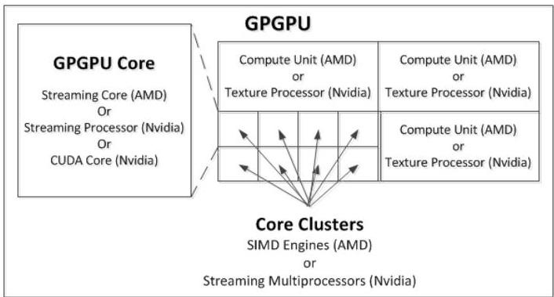
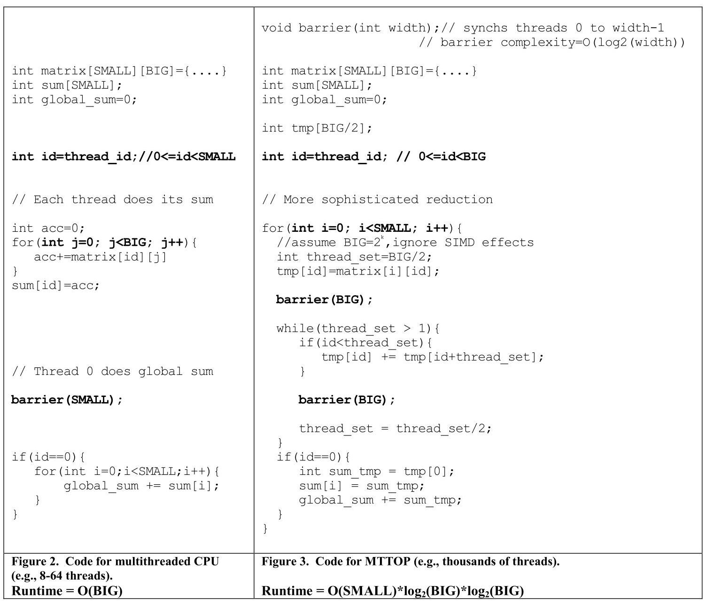
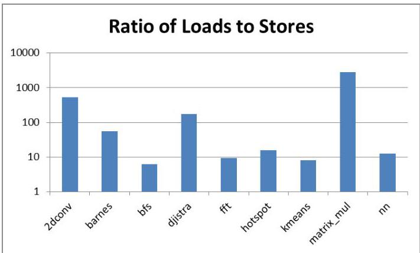
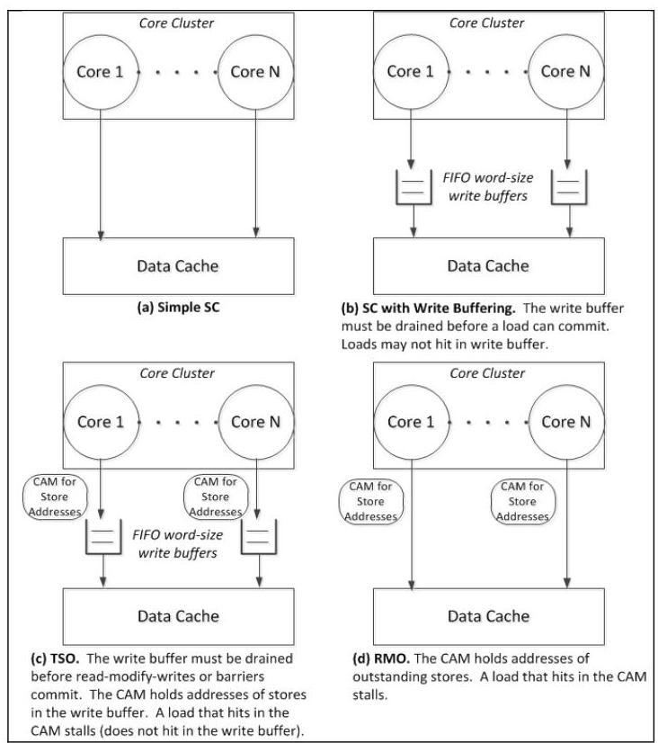
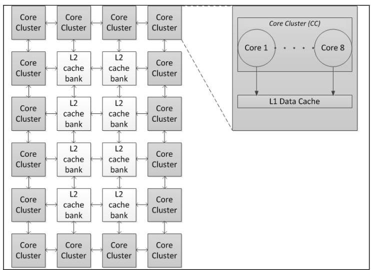
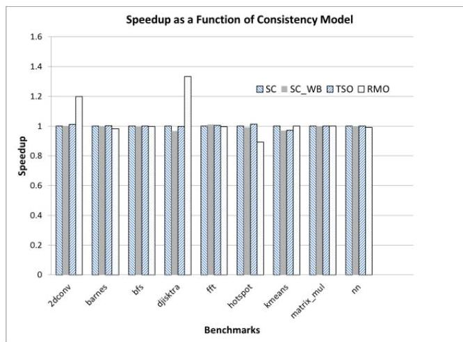

Exploring Memory Consistency for Massively-Threaded Throughput-Oriented Processors
Blake A. Hechtman and Daniel J. Sorin
布莱克·A·赫克特曼与丹尼尔·J·索林
Department of Electrical and Computer Engineering
电气与计算机工程系（Department of Electrical and Computer Engineering）
Duke University
杜克大学 (Duke University)
Durham, NC, USA
美国北卡罗来纳州达勒姆
bah13@duke.edu, sorin@ee.duke.edu
bah13@duke.edu, sorin@ee.duke.edu
ABSTRACT
We re-visit the issue of hardware consistency models in the new context of massively-threaded throughput-oriented processors (MTTOPs). A prominent example of an MTTOP is a GPGPU, but other examples include Intel's MIC architecture and some recent academic designs. MTTOPs differ from CPUs in many significant ways, including their ability to tolerate latency, their memory system organization, and the characteristics of the software they run. We compare implementations of various hardware consistency models for MTTOPs in terms of performance, energy-efficiency, hardware complexity, and programmability. Our results show that the choice of hardware consistency model has a surprisingly minimal impact on performance and thus the decision should be based on hardware complexity, energy-efficiency, and programmability. For many MTTOPs, it is likely that even a simple implementation of sequential consistency is attractive.
我们在大规模线程吞吐量导向处理器（massively-threaded throughput-oriented processors, MTTOP）这一新背景下重新审视硬件一致性模型的问题。GPGPU 是 MTTOP 的一个突出例子，此外还包括英特尔的 MIC 架构和一些近期的学术设计。MTTOP 与 CPU 在许多重要方面存在差异，包括其延迟容忍能力、存储系统组织以及所运行软件的特性。我们从性能、能效、硬件复杂度和可编程性等方面比较了 MTTOP 上各种硬件一致性模型的实现。结果表明，硬件一致性模型的选择对性能的影响出人意料地微乎其微，因此决策应基于硬件复杂度、能效和可编程性。对许多 MTTOP 而言，即使是简单的顺序一致性（sequential consistency）实现也很可能具有吸引力。
1. INTRODUCTION
Today's general purpose (CPU) multicore processors all precisely specify their hardware memory consistency models (e.g., x86 [29], IBM Power, SPARC TSO [36], etc.). These memory consistency models guarantee the specified orderings of reads and writes by cores [1][33], and differences between consistency models can have significant impacts on programmability, performance, and hardware implementation complexity. The choice of a consistency model is thus quite important and, in the 1990s, there was a significant body of influential research delving into the trade-offs between hardware consistency models for multiprocessors consisting of multiple CPU cores [15][13][2].
当今的通用 (CPU) 多核处理器都精确地规定了其硬件内存一致性模型 (hardware memory consistency models)（例如 x86 [29]、IBM Power、SPARC TSO [36] 等）。这些内存一致性模型保证了核心读写的指定顺序 [1][33]，而一致性模型之间的差异会对可编程性 (programmability)、性能 (performance) 和硬件实现复杂度 (hardware implementation complexity) 产生显著影响。因此，一致性模型的选择至关重要，并且在 1990 年代，有大量有影响力的研究深入探讨了由多个 CPU 核心组成的多处理器 (multiprocessors) 的硬件一致性模型之间的权衡 [15][13][2]。
In addition to CPU multicores, a new system model is emerging. These systems are massively-threaded throughput-oriented processors (MTTOPs-pronounced "empty tops"). The most prominent examples of MTTOPs are GPGPUs, but MTTOPs also include Intel's Many Integrated Core (MIC) architecture [28] and academic accelerator designs such as Rigel [16] and vector-thread architectures [18]. The key features that distinguish MTTOPs from CPU multicores are: a very large number of cores, relatively simple core pipelines, hardware support for a large number of threads per core, and support for efficient data-parallel execution using the SIMT execution model. The generalized MTTOP that we evaluate in this paper also provides cache-coherent shared memory, because we believe the trend is in that direction. Some current MTTOPs, such as MIC and ARM's Mali GPU [34], already provide cache-coherent shared memory or shared memory without cache coherence, like AMD's Heterogeneous System Architecture [35]. Recent academic research has also explored cache coherence for GPUs [30] and CPU/GPU chips [14].
除了CPU多核之外，一种新的系统模型正在兴起。这些系统是大规模线程吞吐量导向处理器（massively-threaded throughput-oriented processors，MTTOPs，读作“empty tops”）。MTTOPs最突出的实例是通用图形处理器（GPGPUs），但也包括英特尔的众核架构（Many Integrated Core，MIC）[28]以及学术加速器设计，如Rigel [16]和向量线程架构（vector-thread architectures）[18]。将MTTOPs与CPU多核区分开来的关键特性包括：极其大量的核心、相对简单的核心流水线、每个核心的硬件支持大量线程，以及利用单指令多线程（SIMT）执行模型支持高效的数据并行执行。我们在本文中评估的通用MTTOP还提供缓存一致共享内存，因为我们相信趋势正在朝着这个方向发展。当前一些MTTOPs，如MIC和ARM的Mali GPU [34]，已经提供缓存一致共享内存，或像AMD的异构系统架构（Heterogeneous System Architecture）[35]那样提供无缓存一致性的共享内存。近期的学术研究也探索了GPU的缓存一致性[30]以及CPU/GPU芯片的缓存一致性[14]。
Given that MTTOPs differ from multicore CPUs in significant ways and that they tend to run different kinds of workloads, we believe it is time to re-visit the issue of hardware memory consistency models for MTTOPs. It is not clear how these differences affect the trade-offs between consistency models, although one might expect that the extraordinary amount of concurrency in MTTOPs would make the choice of consistency model crucial. It is widely believed that the most prominent MTTOPs, GPUs, provide only very weak ordering guarantees \({}^{1}\) , and conventional wisdom is that weak ordering is most appropriate for GPUs. We largely agree with this conventional wisdom-but only insofar as it applies to graphics applications.
由于大规模线程吞吐导向处理器（MTTOPs）与多核CPU在重要方面存在差异，且它们往往运行不同类型的工作负载，我们认为现在是时候重新审视针对MTTOPs的硬件内存一致性模型问题了。目前尚不清楚这些差异会如何影响不同一致性模型之间的权衡，尽管人们可能预计，MTTOPs中极高的并发度会使一致性模型的选择变得至关重要。普遍观点认为，最主流的MTTOPs——即图形处理器（GPUs）——仅提供非常弱的排序保证\({}^{1}\)，并且传统观念是弱排序最适合图形处理器。我们基本赞同这一传统观点——但仅限于其适用于图形应用时。
For GPGPU computing and MTTOP computing, in general, the appropriate choice of hardware consistency model is less clear. Even though current HLLs for GPGPUs provide very weak ordering, that does not imply that weakly ordered hardware is desirable. Recall that many HLLs for CPUs have weak memory models (e.g., C++ [6], Java [22]), yet that does not imply that all CPU memory models should be similarly weak [15].
对于通用图形处理器（GPGPU）计算和大规模线程吞吐量导向处理器（MTTOP）计算，通常而言，硬件一致性模型的适当选择尚不明确。尽管当前用于GPGPU的高层语言（HLL）提供了非常弱的排序，但这并不意味着弱排序硬件是可取的。回想一下，许多用于CPU的高层语言具有弱内存模型（例如，C++ [6]、Java [22]），但这并不意味着所有CPU内存模型都应同样弱 [15]。
In this paper, we compare various hardware consistency models for MTTOPs in terms of performance, energy-efficiency, hardware complexity, and programmability. Perhaps surprisingly, we show that hardware consistency models have little impact on the performance of our MTTOP system model running MTTOP workloads. The MTTOP can be strongly ordered and often incur only negligible performance loss compared to weaker consistency models. Furthermore, stronger models enable simpler and more energy-efficient hardware implementations and are likely easier for programmers to reason about.
在本文中，我们从性能、能效、硬件复杂度和可编程性等方面，比较了适用于大规模线程吞吐量导向处理器（massively-threaded throughput-oriented processors, MTTOP）的各种硬件内存一致性模型。或许令人意外的是，我们发现硬件一致性模型对运行 MTTOP 工作负载的 MTTOP 系统模型的性能影响甚微。MTTOP 可以采用强顺序模型，且与较弱的一致性模型相比，通常仅带来可忽略不计的性能损失。此外，更强的模型能够带来更简单、更节能的硬件实现，并且可能更容易被程序员理解和推理。
In this paper, we make three primary contributions:
在本文中，我们做出了三项主要贡献：
Permission to make digital or hard copies of all or part of this work for personal or classroom use is granted without fee provided that copies are not made or distributed for profit or commercial advantage and that copies bear this notice and the full citation on the first page. To copy otherwise, to republish, to post on servers or to redistribute to lists, requires prior specific permission and/or a fee.
允许个人或课堂教学使用本作品的全部或部分内容制作数字或硬拷贝，无需付费，但前提是这些拷贝不得用于营利或商业目的，并且拷贝须在首页附上本声明及完整的引用信息。如需以其他方式复制、重新发布、发布到服务器上或分发给名单列表，则需要事先获得特定许可和/或支付费用。
ISCA'13 Tel-Aviv, Israel
ISCA'13 以色列特拉维夫
Copyright 2013 ACM 978-1-4503-2079-5/13/06... $15.00
版权所有 2013 ACM 978-1-4503-2079-5/13/06... $15.00
\({}^{1}\) Public documentation of GPU hardware is limited, especially because the hardware ISAs are not public.
\({}^{1}\) GPU 硬件的公开文档有限，尤其是因为硬件指令集架构 (ISA) 并未公开。
- We discuss the issues involved in implementing hardware consistency models for MTTOPs.
- 我们讨论了为大规模线程吞吐量导向处理器 (MTTOPs) 实现硬件一致性模型 (hardware consistency models) 所涉及的问题。
- We explore the trade-offs between hardware consistency models for MTTOPs.
- 我们探究了用于大规模线程吞吐量导向处理器 (MTTOPs) 的硬件一致性模型 (hardware consistency models) 之间的权衡。
- We experimentally demonstrate that the choice of consistency model often has negligible impact on performance.
- 我们通过实验证明，一致性模型 (consistency model) 的选择通常对性能影响微乎其微。
The rest of the paper is as follows. In Section 2, we present the memory systems of some current MTTOPs, in order to understand the current state of the art. In Section 3, we provide a brief tutorial on hardware consistency models for CPUs; our MTTOP consistency models are natural extensions of existing CPU models. In Section 4, we present our MTTOP system model. In Section 5, we discuss the numerous reasons for re-visiting the issue of hardware consistency models in the context of MTTOPs. In Section 6, we present implementations of several MTTOP hardware consistency models, and we experimentally evaluate them in Section 7. In Section 8, we re-visit the programmability issue. In Section 9, we discuss some limitations of our analysis, including the impact of assumptions we make. Lastly, in Section 10, we compare this paper to prior work.
本文的其余部分安排如下。在第 2 节中，我们介绍了一些当前大规模线程吞吐量导向的处理器（MTTOP）的存储系统，以便了解当前的技术水平。在第 3 节中，我们提供了关于 CPU 硬件一致性模型的简要教程；我们的 MTTOP 一致性模型是现有 CPU 模型的自然扩展。在第 4 节中，我们给出了 MTTOP 的系统模型。在第 5 节中，我们讨论了在 MTTOP 背景下重新审视硬件一致性模型问题的众多原因。在第 6 节中，我们给出了一些 MTTOP 硬件一致性模型的实现，并在第 7 节中通过实验进行了评估。在第 8 节中，我们重新审视了可编程性问题。在第 9 节中，我们讨论了分析的一些局限性，包括我们所做假设的影响。最后，在第 10 节中，我们将本文与先前的工作进行了比较。
2. Current MTTOP Memory Systems
We now present the state of the art in MTTOP memory systems.
我们现在介绍大规模线程吞吐量导向处理器 (massively-threaded throughput-oriented processors, MTTOP) 内存系统的最新进展。
2.1. GPGPU Memory Systems
Because no vendor has published a hardware consistency model for a GPGPU, we describe the memory system implementations and infer-to the best of our ability given public documentation-what consistency guarantees they provide. We present two GPGPUs, focusing on hardware designed to be general-purpose rather than on hardware focused solely on graphics. We omit a discussion of Intel's HD Graphics, because we cannot find sufficient publicly available documentation.
由于没有供应商公布过GPGPU的硬件一致性模型（hardware consistency model），我们根据公开文档，尽其所能地描述了内存系统的实现，并推断了它们所提供的一致性保证。我们介绍两款GPGPU，重点关注设计为通用目的的硬件，而非仅面向图形的硬件。我们未讨论Intel的HD Graphics，因为我们未能找到足够的公开文档。
In Figure 1, we illustrate a GPGPU core in the context of a complete GPGPU, and we show the commercial names used by AMD and Nvidia. GPU terminology is inconsistent, particularly across commercial products, and we prefer to use more generic terms. In particular, we use the terminology of a GPGPU "core", rather than terminology specific to a commercial product. A GPGPU core is a single core pipeline, and multiple cores are grouped together to form "core clusters" that execute in a SIMT fashion. A core cluster often shares Fetch and Decode stages. Commercial designs often group core clusters into larger groups, but this level of hierarchy is irrelevant to this paper. The generic MTTOP design we evaluate later in the paper has this same hierarchical structure with simple cores grouped into core clusters that execute in a SIMT fashion.
在图 1 中，我们在一个完整通用图形处理器（GPGPU）的背景下展示了一个 GPGPU 核心，并给出了 AMD 和 Nvidia 使用的商业名称。GPU 术语缺乏一致性，尤其是在不同商业产品之间，我们倾向于使用更通用的术语。特别地，我们使用 GPGPU“核心”这一术语，而非特定于某款商业产品的术语。一个 GPGPU 核心是一条单独的核心流水线，多个核心组合成“核心簇”，以单指令多线程（SIMT）方式执行。一个核心簇通常共享取指（Fetch）和解码（Decode）阶段。商业设计常将多个核心簇进一步组合成更大的分组，但这一层次的层次结构对本文而言无关紧要。我们在本文后面评估的通用 MTTOP 设计具有相同的层次化结构：简单核心组合成核心簇，以 SIMT 方式执行。
We also unify our terminology for common GPGPU (and MTTOP) synchronization instructions. We use "Fence" (often known as a "Memory Barrier") to denote an instruction that is used by a programmer to enforce ordering between memory instructions (loads, stores, atomic read-modify-writes) in a given thread. We use "Barrier" to denote an instruction that synchronizes the execution of a subset of threads, such that all threads in the subset must reach the Barrier instruction before any of them may resume execution beyond the Barrier.
我们还统一了常见 GPGPU（和 MTTOP）同步指令的术语。我们用“栅栏（Fence）”（常被称为“内存屏障（Memory Barrier）”）来指代程序员用于在给定线程中强制内存指令（加载、存储、原子读-改-写）之间顺序的指令。我们用“屏障（Barrier）”来指代同步一组线程执行的指令，要求该组中的所有线程都必须到达屏障指令后，其中任何一个线程才能继续执行屏障之后的代码。

Figure 1. GPGPU Hierarchy and Terminology
图1. 通用图形处理器 (GPGPU) 层次结构与术语
2.1.1 AMD's Southern Islands
The AMD Southern Islands GPU \({}^{2}\) provides a single virtual address space that is partitioned into three types of memory: global memory, local data store (LDS), and global data store (GDS). Global memory consists of write-through L1 and L2 caches at each GPGPU core. The LDS is a single structure shared by an entire core. The GDS is a single structure shared by the entire GPU.
AMD Southern Islands GPU\({}^{2}\) 提供了一个单一的虚拟地址空间，该空间划分为三种内存类型：全局内存 (global memory)、本地数据存储 (local data store, LDS) 和全局数据存储 (global data store, GDS)。全局内存由每个 GPGPU 内核中的写直达 (write-through) L1 和 L2 缓存构成。LDS 是一个由整个内核共享的单一结构。GDS 则是一个由整个 GPU 共享的单一结构。
Because there is one LDS per "work group" (or "thread block"), the GPU is coherent and provides strong ordering (what we later explain to be sequential consistency in Section 3.1) for accesses within a work group. Similarly, the GDS is coherent and provides strong ordering for all threads. The global memory is not coherent and its ordering is less strict, by default, but there are hooks for software to add coherence and ordering when desired. Specifically, when software performs synchronization instructions-Fences and Barriers-the dirty data in the L1 is forced back to lower levels of the memory system, where it becomes visible. Synchronization instructions, after draining the L1, then invalidate all L1 blocks. There is not yet a formal, implementation-independent memory consistency model for global memory.
因为每个“工作组”（或“线程块”）有一个局部数据共享（LDS），因此 GPU 在工作组内的访问上保持一致性，并提供强顺序（我们稍后在第 3.1 节中解释为顺序一致性（sequential consistency））。类似地，全局数据共享（GDS）对所有线程保持一致性（coherent）并提供强顺序。全局内存默认情况下不是一致的（coherent），并且其顺序要求不那么严格，但软件可以在需要时通过钩子（hooks）添加一致性和顺序。具体而言，当软件执行同步指令——Fences（栅栏）和 Barriers（屏障）——时，L1 中的脏数据会被强制写回到存储系统的较低层级，从而变得可见。同步指令在排空 L1 之后，会使所有 L1 块失效。目前还没有一个正式的、独立于具体实现的全局内存内存一致性模型。
2.1.2 Nvidia's Fermi
The Nvidia Fermi GPGPU \({}^{3}\) provides a unified address space that is divided into local, shared, and global sub-spaces. Each core can access an L1 storage structure that is partitioned between L1 cache and a scratchpad memory that is shared by all threads on the local group of cores. The L1 cache is backed by an L2 cache that is shared by all threads on all cores.
英伟达 Fermi 通用图形处理单元（GPGPU）\({}^{3}\) 提供了一个统一的地址空间，该地址空间被划分为本地、共享及全局子空间。每个核心可访问一个 L1 存储结构，该结构在 L1 缓存与一个便签式存储器（scratchpad memory）之间进行分区，而此便签式存储器由本地核心组上的所有线程共享。L1 缓存由一个 L2 缓存作为后备，该 L2 缓存由所有核心上的全部线程共享。
Fermi provides limited hooks for performing synchronization and ordering memory operations. The primary mechanism is a Fence instruction. When a thread reaches a Fence instruction, the Fence guarantees that all prior (in program order) writes by that thread are propagated to the L2 cache or memory and the entire L1 cache is invalidated before the thread is able to continue. Using these hooks, a programmer can synchronize access to shared data, e.g., prohibit concurrent reads and writes to the same address.
Fermi 为执行同步和内存操作排序提供了有限的支持钩子（hooks）。主要机制是一条围栏指令（Fence instruction）。当线程执行到一条围栏指令时，该围栏保证该线程所有先前的（按程序顺序（program order））写入都已传播至二级缓存（L2 cache）或内存，且整个一级缓存（L1 cache）被无效化后，线程才能继续执行。利用这些钩子，程序员可以同步对共享数据的访问，例如禁止对同一地址的同时读写。
The limited publicly available documentation describes the hardware's behavior, but we have not discovered any documentation of an implementation-independent hardware memory model.
有限的公开文档描述了硬件行为，但我们尚未发现任何关于实现无关的硬件内存模型（hardware memory model）的文档。
\({}^{2}\) http://developer.amd.com/afds/assets/presentations/2620_final.pdf
\({}^{2}\) http://developer.amd.com/afds/assets/presentations/2620_final.pdf
\({}^{3}\) http://www.nvidia.com/content/PDF/fermi_white_papers/NVIDIA_Fer mi_Compute_Architecture_Whitepaper.pdf
\({}^{3}\) http://www.nvidia.com/content/PDF/fermi_white_papers/NVIDIA_Fer mi_Compute_Architecture_Whitepaper.pdf
2.2. Intel's Many Integrated Core (MIC)
Intel's MIC architecture [28] features dozens of multithreaded and otherwise relatively simple cores, and its goal is throughput rather than single-thread performance. The memory system provides cache-coherent shared memory, and the coherence protocol operates over a ring-based interconnection network.
英特尔的 MIC（Many Integrated Core）架构 [28] 拥有数十个多线程且其他方面相对简单的核心，其设计目标是吞吐量而非单线程性能。内存系统提供缓存一致的共享内存，一致性协议则运行在基于环的互连网络上。
As an Intel product based on the x86 architecture, MIC satisfies Intel's longstanding x86/TSO consistency model [25][29][28]. This model, which we describe in detail in Section 3.2, is a CPU model that was developed to enable the use of FIFO write buffers to hide the latency of stores. This consistency model predates MIC by many years and was thus not designed for MTTOP hardware or software.
作为基于 x86 架构的 Intel 产品，MIC 满足 Intel 长期以来的 x86/TSO 一致性模型 (consistency model) [25][29][28]。该模型（我们将在第 3.2 节详细描述）是一种 CPU 模型，其开发初衷是为了能利用 FIFO 写缓冲区 (write buffer) 来隐藏存储延迟。这一一致性模型比 MIC 早诞生多年，因此并非为 MTTOP 硬件或软件而设计。
3. HARDWARE CONSISTENCY FOR CPUs
This section is intended as a brief review of hardware memory consistency models for shared memory chips with general purpose cores (CPUs). We refer readers seeking more depth to tutorials on this topic [1][33].
本节旨在简要回顾针对配备通用核心（CPU）的共享内存芯片的硬件内存一致性模型（hardware memory consistency models）。寻求更深入了解的读者可参考相关教程[1][33]。
3.1. Sequential Consistency (SC)
The memory consistency model specifies the legal orderings of loads and stores, by all threads, to shared memory. The simplest model, sequential consistency [20], specifies that there must appear to be a total order of all loads and stores, across all threads, that respects the program order at each thread. Each load obtains the value of the most recent store to the same address in the total order. Sequential consistency (SC) is the most restrictive model in that it permits no reordering of loads or stores with respect to per-thread program orders.
内存一致性模型规定了所有线程对共享内存的加载和存储操作的合法顺序。最简单的模型，顺序一致性（sequential consistency）[20]，要求所有线程的所有加载和存储操作必须存在一个表面上的全局全序，且该全序尊重每个线程的程序顺序。每个加载操作获取的是该全局全序中同一地址最近一次存储的值。顺序一致性（SC）是最严格的模型，因为它不允许任何加载或存储操作相对于各线程的程序顺序进行重排序。
3.2. Total Store Order (TSO) / x86
Consistency models other than SC permit more reorderings and thus may enable greater performance. A well-known example is the total store order (TSO) model used in the SPARC architecture [36] and later formalized to encompass the x86 model as x86-TSO [25]. TSO is similar to SC except it does not enforce order from a thread's store to a subsequent (in program order) load to a different address. This reordering may seem somewhat arbitrary, but it crucially enables the use of a FIFO write buffer for committed stores. This write buffer enables the core to commit a store without waiting for the store to access the cache, thus freeing the core from maintaining state about the store and enabling the core to proceed. If software needs order between a store and a subsequent load, the software-programmer or compiler-must insert a Fence instruction between them. A Fence guarantees that all instructions prior (in program order) to the Fence are visible to other threads before the Fence completes, and it guarantees that none of the instructions after the Fence are visible to other threads until the Fence completes.
除 SC 之外的一致性模型允许更多的重排序 (reorderings)，因此可能实现更高的性能。一个众所周知的例子是 SPARC 架构 [36] 中使用的全存储排序 (Total Store Order, TSO) 模型，该模型后来被形式化以涵盖 x86 模型，被称为 x86-TSO [25]。TSO 与 SC 类似，但它不强制一个线程的存储 (store) 到后续（按程序顺序）对另一地址的加载 (load) 之间的顺序。这种重排序看似有些随意，但它关键地支持使用先进先出写缓冲区 (FIFO write buffer) 来存放已提交的存储 (committed stores)。这个写缓冲区使核心 (core) 能够提交存储，而不必等待该存储访问缓存 (cache)，从而让核心无需维护关于该存储的状态，并能够继续执行。如果软件需要在某个存储和后续加载之间保持顺序，那么软件程序员或编译器必须在它们之间插入一条栅障指令 (Fence instruction)。栅障保证，在栅障完成之前，所有在栅障之前（按程序顺序）的指令对其他线程都可见，并且保证栅障之后的任何指令在栅障完成之前对其他线程都不可见。
3.3. Relaxed Memory Order (RMO)
Some consistency models are even more relaxed than TSO, and they all have their own particular quirks. Examples include SPARC RMO [36], Alpha [31], and the generalized tutorial example XC [33]. In the rest of this paper, we will use RMO as our exemplar of this class of models. In general, these models enforce no ordering between loads and stores to different addresses. If software needs ordering, it must use Fence instructions to obtain it. The motivation for these relaxed models is performance; with the bare minimum of ordering, these models should enable the most optimizations and thus the best performance. For example, a system with RMO permits the use of an unordered, coalescing write buffer between each core and its data cache; this hardware optimization would lead to executions that violate SC and TSO.
有些一致性模型甚至比 TSO 更为宽松，且各有其独特的微妙之处。例子包括 SPARC RMO [36]、Alpha [31] 以及通用的教程示例 XC [33]。在本文余下部分，我们将以 RMO 作为此类模型的代表。总的来说，这些模型不对不同地址之间的加载 (load) 和存储 (store) 施加任何顺序约束。如果软件需要某种顺序，就必须通过 Fence 指令来获得。这类宽松模型的动机在于性能；在最少顺序约束的条件下，它们应能支持最多的优化，从而获得最佳性能。例如，采用 RMO 的系统允许在每个核心与其数据缓存之间使用无序、可合并的写缓冲 (write buffer)；这种硬件优化会导致出现违反 SC 和 TSO 的执行结果。
3.4.SC for Data Race Free
Another way proposed to implement strong consistency on CPUs is Sequential Consistency for Data-race Free (SC for DRF) programs [2]. The idea is that a program without data races behaves in a sequentially consistent fashion even on weakly ordered hardware. That is, a programmer who writes DRF code can reason about SC, even if the underlying hardware consistency model is weaker than SC. SC for DRF relies on the programmer or compiler to label synchronization variables as well as the data it protects.
在 CPU 上实现强一致性的另一种提议方法是针对无数据竞争程序的顺序一致性（Sequential Consistency for Data-race Free，SC for DRF）[2]。其思想是，一个没有数据竞争的程序即使在弱序硬件上也会表现出顺序一致的行为。也就是说，编写无数据竞争代码的程序员可以按照 SC 进行推理，即便底层硬件一致性模型弱于 SC。SC for DRF 依赖于程序员或编译器来标记同步变量及其所保护的数据。
All known CPU consistency models provide SC for DRF, and we believe that SC for DRF may be appropriate for MTTOPs. The memory systems of many current MTTOPs, including GPGPUs, provide sufficient architectural support for writing DRF code. They have Fence instructions that guarantee that all prior memory operations are complete, and they have atomic operations that are globally performed to enable synchronization. If an MTTOP provides these architectural mechanisms and supports a consistency model like the models described in this section, then SC for DRF is a possibility.
所有已知的CPU一致性模型都为数据竞争自由（DRF）程序提供了顺序一致性（SC），我们认为，对于大规模线程吞吐导向处理器（MTTOP）而言，针对DRF提供SC或许是合适的。当前许多MTTOP（包括GPGPU）的内存系统都为编写DRF代码提供了足够的架构支持。它们具有Fence（内存屏障）指令，可保证所有先前的内存操作均已完成，并且具有全局执行的原子操作以支持同步。若MTTOP提供这些架构机制，并支持类似于本节所述的一致性模型，那么针对DRF提供SC便是一种可能。
3.5.The Debate
The intense debates about the relative merits of consistency models ultimately boiled down to programmability versus performance. (These debates were in the era before power and energy were major issues.) The general consensus was that stronger models like SC or TSO/x86 are easier for programming, and the question was how much performance was sacrificed by using strongly ordered models. Researchers showed that there is indeed a non-trivial gap in performance-ranging from around 10% to 40%, depending heavily on system models and how the implementations support the consistency models-but that the performance gaps can often be narrowed (e.g., to 10-15%) by using speculation to accelerate the stronger models [13][27].
关于一致性模型（consistency models）相对优劣的激烈争论最终归结为可编程性（programmability）与性能之间的权衡。（这些争论发生在功耗和能耗成为主要问题之前的时代。）普遍共识是，像顺序一致性（SC）或全存储排序/x86（TSO/x86）这样的强模型更易于编程，问题在于使用强有序模型会牺牲多少性能。研究者表明，确实存在不小的性能差距——范围从大约10%到40%，具体取决于系统模型以及实现如何支持一致性模型——但通过使用推测（speculation）来加速更强的模型，这种性能差距往往可以缩小（例如，到10–15%）[13][27]。
Our goal in this paper is to re-visit the issue of hardware consistency models, but in the new context of MTTOPs. MTTOPs differ from CPUs in many significant ways, including their ability to tolerate latency and their memory system organization.
本文的目标是重新审视硬件一致性模型问题，但置于大规模线程吞吐量导向处理器（massively-threaded throughput-oriented processors, MTTOPs）的新背景下。MTTOP 与 CPU 在许多重要方面存在差异，包括其容忍延迟的能力和内存系统组织。
4. MTTOP SYSTEM MODEL
In this paper, we seek to provide a very general model of an MTTOP that retains just those features that fundamentally distinguish MTTOPs from CPUs without concerning ourselves with features from today's MTTOPs that are less fundamental. In particular, we do not model the quirks of today's GPGPUs; although GPGPUs are trending towards even greater generality and fewer GPU-specific constraints, they still retain many unconventional features.
在本文中，我们试图提供一个非常通用的大规模线程吞吐量导向处理器（massively-threaded throughput-oriented processor, MTTOP）模型，该模型仅保留那些从根本上将 MTTOP 与中央处理器（CPU）区分开来的特征，而不关心当今 MTTOP 中那些不太基本的特征。特别是，我们不对当今通用图形处理器（general-purpose graphics processing unit, GPGPU）的古怪之处进行建模；尽管 GPGPU 正趋向于更高的通用性和更少的 GPU 特定约束，但它们仍保留了许多非常规的特征。
The key features of our MTTOP model are: a very large number of cores, relatively simple core pipelines, hardware support for a large number of threads per core, and support for efficient data-parallel execution using the SIMT execution model. This model shares some but not all features with all of today's MTTOPs.
我们的 MTTOP 模型的主要特征是：大量的核心、相对简单的核心流水线、每个核心支持大量线程的硬件，以及使用 SIMT（单指令多线程）执行模型支持高效数据并行执行。该模型与当前所有 MTTOP 共享部分特征但不完全一致。
We assume an MTTOP with many cores, and cores are grouped into 8-core clusters. Each core is a 1-wide, in-order, nonspeculative pipeline that can support 64 thread contexts. All 8 cores in a core cluster share a single Fetch pipeline stage and Decode pipeline stage, and they execute in SIMT fashion. A core switches out a thread when the thread issues a load, store, or Fence that is not immediately satisfied. All 8 cores in a core cluster share an L1 instruction cache and a small writeback L1 data cache. Each core can have at most one outstanding load miss.
我们假设一个大规模线程吞吐量导向处理器（MTTOP）包含多个核心，这些核心被分组为8核集群。每个核心是一条单发射、顺序执行、非推测（nonspeculative）的流水线，能够支持64个线程上下文。一个核心集群中的所有8个核心共享同一个取指（Fetch）流水线阶段和译码（Decode）流水线阶段，并以单指令多线程（SIMT）的方式执行。当一个线程发出的加载、存储或内存屏障（Fence）指令未能立即满足时，核心会切换出该线程。核心集群中的所有8个核心共享一个一级指令缓存和一个小型写回式一级数据缓存。每个核心最多允许一个未完成的加载缺失。
Our MTTOP's memory system provides cache-coherent shared memory for all cores. This feature is perhaps the most significant departure from most of today's MTTOPs, although recent academic research [30][14] and commercial chips indicate a trend towards coherence. Intel's MIC provides cache-coherent shared memory. ARM has presented the Mali GPU with coherence as well as a CPU/GPU chip with coherence [34]. AMD's Heterogeneous System Architecture (HSA) [35] provides shared virtual memory and virtual-to-physical address translation for CPU/GPU chips. Nvidia GPUs provide global memory and Unified Virtual Addressing via CUDA. Moreover, the future of MTTOPs depends on building up a large software ecosystem, and doing so is extremely difficult for platforms that do not provide hardware coherence. If software must manage the caches, then software interoperability and composability becomes far more complicated. Furthermore, concerns about coherence not scaling have been addressed by some recent work that shows that coherence can scale far better than many had thought [23][11], permitting it to be used in MTTOPs with hundreds and perhaps even thousands of caches.
我们的大规模线程吞吐量导向处理器（MTTOP）的内存系统为所有核心提供缓存一致性共享内存（cache-coherent shared memory）。这一特性或许是相比当今大多数MTTOP最显著的偏离，尽管近期的学术研究[30][14]和商用芯片都体现出向一致性（coherence）发展的趋势。英特尔MIC提供缓存一致性共享内存。ARM已经推出了具有一致性的Mali GPU以及具有一致性的CPU/GPU芯片[34]。AMD的异构系统架构（HSA）[35]为CPU/GPU芯片提供共享虚拟内存和虚地址到物理地址的转换。Nvidia GPU通过CUDA提供全局内存和统一虚拟寻址。此外，MTTOP的未来取决于构建庞大的软件生态系统，而对于不提供硬件一致性的平台来说，这样做极其困难。如果必须由软件来管理缓存（cache），那么软件互操作性和可组合性将变得远为复杂。此外，对于一致性无法扩展的担忧已被一些近期工作所解决，这些工作表明，一致性的扩展能力远超许多人此前的设想[23][11]，从而允许其用于具有数百乃至数千个缓存的MTTOP中。
5.WHY REVISIT MEMORY CONSISTENCY?
We seek to compare hardware consistency models for MTTOPs. MTTOPs change the trade-offs for a memory consistency model compared with the trade-offs architects consider for CPUs, for a variety of reasons. We focus on eight particularly relevant and significant differences between MTTOPs and CPUs.
我们试图比较面向大规模线程吞吐量导向处理器 (massively-threaded throughput-oriented processors, MTTOPs) 的硬件一致性模型。与架构师为 CPU 考虑的权衡相比，MTTOPs 由于种种原因改变了内存一致性模型的权衡。我们重点关注 MTTOPs 与 CPU 之间八个尤为相关且显著的差异。
5.1. Outstanding Cache Misses per Thread \(\rightarrow\) Potential Memory Level Parallelism
MTTOPs consist of simple, in-order pipelines, unlike the more sophisticated out-of-order pipelines that are common in CPUs. MTTOPs are also less likely than CPUs to benefit from prefetching into L1 caches. Thus, a thread running on an MTTOP is unlikely to have a large number of outstanding requests. In contrast, a CPU seeks to maximize ILP and memory level parallelism (MLP) per thread, and one of the keys to single-threaded performance on a CPU is issuing memory requests in parallel [10]. CPUs execute instructions out of order so as to reach memory accesses sooner and overlap them with already-outstanding misses. CPUs also prefetch extensively. Thus, a thread running on a CPU may often have many concurrent outstanding misses, whereas MTTOPs likely have one or perhaps a few outstanding misses per thread. MTTOPs overcome the limited MLP per thread by supporting vastly more threads per core, thus enabling many outstanding requests per core.
MTTOP（大规模多线程面向吞吐量的处理器，massively-threaded throughput-oriented processor）由简单的顺序流水线构成，这与 CPU 中常见的更复杂的乱序流水线不同。与 CPU 相比，MTTOP 也更难以从预取到 L1 缓存中获益。因此，在 MTTOP 上运行的线程不太可能产生大量未完成请求。相反，CPU 追求最大化每个线程的指令级并行（ILP）与内存级并行（memory level parallelism, MLP），而 CPU 上单线程性能的关键之一就是并行发出内存请求[10]。CPU 以乱序方式执行指令，以便更早地到达内存访问，并将其与已有的未命中请求重叠。CPU 也广泛使用预取。因此，在 CPU 上运行的线程通常会有多个并发的未命中请求，而 MTTOP 每个线程可能只有一个或极少的未命中请求。MTTOP 通过在每个核心上支持极大量线程来克服每个线程有限的 MLP，从而使得每个核心能同时拥有大量未完成请求。
Impact on consistency model: Some CPU consistency models and their implementations are designed to optimize each thread's MLP. Such optimizations for per-thread MLP are likely to be less beneficial for MTTOPs.
对一致性模型的影响：一些 CPU 一致性模型及其实现旨在优化每个线程的存储级并行 (memory-level parallelism, MLP)。此类针对每线程 MLP 的优化对于大规模线程吞吐量导向处理器 (massively-threaded throughput-oriented processor, MTTOP) 来说可能不太有益。
5.2. Threads per Core \(\rightarrow\) Latency Tolerance
An MTTOP core supports dozens of threads. In contrast, a typical CPU core supports only 1-8 thread contexts. Thus, an MTTOP core can-if the software offers enough threads-tolerate large memory access latencies by quickly switching from a thread waiting on memory to other threads that are ready. An MTTOP with sufficient threads to run places huge bandwidth demands on a memory system, because of all the threads it supports, but it tolerates far greater latencies than a CPU. As one indicator of this latency tolerance, many current MTTOPs (GPGPUs) have cache access latencies that are far greater than those of current CPUs.
一个 MTTOP（大规模线程吞吐量导向处理器）核心支持数十个线程。相比之下，一个典型的 CPU 核心仅支持 1–8 个线程上下文（thread context）。因此，如果软件提供了足够的线程，MTTOP 核心能够通过快速从等待内存的线程切换到其他就绪线程，来容忍较大的内存访问延迟。一个拥有充足运行线程的 MTTOP 由于其支持的众多线程，会对内存系统产生巨大的带宽需求（bandwidth demands），但它能容忍比 CPU 大得多的延迟。作为这种延迟容忍（latency tolerance）的一个指标，许多当前的 MTTOP（即 GPGPU，通用图形处理器）的缓存访问延迟（cache access latency）远大于当前 CPU 的缓存访问延迟。
Impact on consistency model: Some CPU consistency models and their implementations are designed to optimize latency. Such optimizations for latency are likely to be less beneficial for MTTOPs.
对一致性模型的影响：一些 CPU 一致性模型及其实现旨在优化延迟。这类针对延迟的优化对于大规模线程吞吐量导向处理器（Massively-Threaded Throughput-Oriented Processors, MTTOPs）可能帮助不大。
5.3. Threads per System \(\rightarrow\) Synchronization and Contention for Shared Data
Typical multicore CPU chips support on the order of a few dozen threads, whereas MTTOPs support hundreds or thousands of threads. Synchronizing vastly more threads and sharing data among them is qualitatively more challenging. MTTOP programmers are likely to avoid the coarse locks and barriers that are often acceptable for CPU programmers, because of the extraordinary contention. A coarse lock or barrier in a CPU workload may incur some contention, but the contention will be less than for a MTTOP and it may even be possible for a CPU to speculatively elide a coarse lock at runtime, as was proposed by Rajwar and Goodman [26] and later implemented in Intel's Hardware Lock Elision (HLE) for the recent Haswell chip [7].
典型的众核 CPU 芯片支持大约几十个线程，而 MTTOP 则支持数百乃至数千个线程。同步如此庞大的线程数量并在其间共享数据，在本质上更具挑战性。MTTOP 程序员很可能会避免使用在 CPU 程序员那里通常可接受的粗粒度锁和屏障，因为存在极大的争用。CPU 工作负载中的粗粒度锁或屏障可能会引发一些争用，但该争用程度低于 MTTOP，并且 CPU 甚至可能像 Rajwar 和 Goodman [26] 所提议的那样，在运行时推测性地消除粗粒度锁，后来英特尔在近期的 Haswell 芯片中以硬件锁消除 (Hardware Lock Elision, HLE) [7] 的形式实现了这一点。
Figure 2 shows a parallel sum of a matrix where SMALL is less than one hundred and BIG is in the thousands. On a CPU, the maximum parallelism would come from parallelizing along the rows (SMALL). Figure 3 shows an equivalent implementation that parallelizes along BIG for an MTTOP. For this to work, the MTTOP must perform a parallel reduction that requires frequent synchronization to avoid data races. Although this code is somewhat simplistic and this example may seem contrived, nearly identical code is executed multiple times per iteration of a Kmeans problem ported to an MTTOP. The take-away point is that synchronization is likely to be far more frequent in MTTOP code. Impact on consistency model: Some CPU consistency models and their implementations rely on the fact that lock and barrier contention is unlikely. For example, some aggressive implementations of SC allow a load to speculatively execute as soon as its address has been computed and then re-execute at Commit to check that the value did not change in the interim [8]. If contention is rare, such optimizations are useful, but contention is likely to be far more frequent in MTTOPs.
图 2 展示了一个矩阵的并行求和，其中 SMALL 小于一百，而 BIG 在千量级。在 CPU 上，最大并行度来自于沿着行（SMALL）进行并行化。图 3 展示了一种针对大规模线程吞吐量导向处理器（MTTOP）的等效实现，沿 BIG 并行化。为实现这一点，MTTOP 必须执行需要频繁同步的并行归约以避免数据竞争。尽管这段代码有些简化且此示例可能看似刻意，但在移植到 MTTOP 的 Kmeans 问题中，每次迭代都会多次执行几乎相同的代码。要点是，同步在 MTTOP 代码中很可能远为频繁。对一致性模型的影响：某些 CPU 一致性模型及其实现依赖于锁和屏障争用不太可能发生的假设。例如，一些激进的顺序一致性（SC）实现允许一条 load 指令在地址计算出来后立即推测执行，然后在提交（Commit）时重新执行以检查期间值未发生变化 [8]。若争用罕见，此类优化颇有价值，但在 MTTOP 中争用很可能远为频繁。

5.4. Threads per System \(\rightarrow\) Opportunities for Reordering
As the number of threads in a program increases (i.e., as there are more threads to perform the same total amount of work), the number of memory operations performed by each thread decreases. Synchronization becomes an increasingly large fraction of the runtime, as we observed in the code in Figure 2 and Figure 3. Because memory operations must complete before synchronizing, in order to prevent data races, there are fewer opportunities to reorder memory operations to achieve memory level parallelism at the thread level.
随着程序中线程数量的增加（即，当有更多线程执行相同总量的工作时），每个线程执行的内存操作数量会减少。同步在运行时间中所占的比例越来越大，正如我们在图2和图3的代码中所观察到的那样。由于内存操作必须在同步之前完成以防止数据竞争，因此通过重新排序内存操作来实现线程级内存级并行（memory level parallelism）的机会就更少了。
Impact on consistency model: Consistency models allow memory operations to be reordered only between synchronizing events. Synchronizing events depend on the specific consistency model and include atomic read-modify-write instructions, Fences, and Barriers. With the increased frequency of synchronization in MTTOP workloads, the window in which memory operations can be reordered shrinks to only a few operations. Consistency models that permit more reordering may offer less benefit to MTTOPs.
对一致性模型 (consistency model) 的影响：一致性模型仅允许内存操作 (memory operations) 在同步事件 (synchronizing events) 之间进行重排序 (reorder)。同步事件取决于具体的一致性模型，包括原子读-修改-写指令 (atomic read-modify-write instructions)、Fence（内存屏障）和 Barrier（同步屏障）。随着大规模线程吞吐量导向处理器 (MTTOP) 工作负载中同步频率的增加，内存操作可被重排序的窗口缩小到仅若干操作。那些允许更多重排序的一致性模型可能对 MTTOP 的益处更少。
5.5. Register Spills/Fills \(\rightarrow\) RAW Dependences
In the MTTOP benchmarks we use in this paper, we observe very few register spills and fills. There are several hypotheses for this behavior, but we focus on the two most plausible. First, vectorized (SIMT) code removes many loops that would be required in CPU code and thus reduces the number of live variables. Second, MTTOP cores tend to have register files that are considerably larger than CPU register files. A core in AMD's Southern Islands GPGPU has a 256 KB register file. A CPU core with 256 64-bit registers has, by comparison, only 2 KB of registers. All other things being equal, with larger register files, the likelihood of register spills and fills decreases. All other things are not equal, though, because an MTTOP core shares its register file across many more threads. Nevertheless, MTTOP register files seem to be sized large enough to mostly avoid spills and fills.
在本文使用的MTTOP基准测试（大规模线程吞吐量导向处理器，massively-threaded throughput-oriented processors, MTTOP）中，我们观察到的寄存器溢出和填充（register spills and fills）非常少。对于这一现象有几种假设，但我们聚焦于最合理的两个。第一，向量化（SIMT）代码消除了CPU代码中所需的许多循环，从而减少了活跃变量（live variables）的数量。第二，MTTOP核心通常拥有比CPU寄存器文件大得多的寄存器文件（register files）。AMD的南方群岛GPGPU中的一个核心拥有256 KB的寄存器文件。相比之下，一个拥有256个64位寄存器的CPU核心仅有2 KB的寄存器。在所有其他条件相同的情况下，更大的寄存器文件会降低寄存器溢出和填充的可能性。然而，并非所有条件都相同，因为一个MTTOP核心需要在更多线程之间共享其寄存器文件。尽管如此，MTTOP寄存器文件似乎足够大，能够基本避免溢出和填充。
Regardless of the cause for fewer spills and fills, this phenomenon reduces the likelihood of read-after-write (RAW) dependences through memory. In fact, in all of the MTTOP benchmarks with which we experiment in this paper, we observe no RAW dependences through memory without a Fence between the store and subsequent load, except during recursion.
无论导致寄存器溢出与填充（spills and fills）减少的原因是什么，这种现象都降低了通过内存产生读后写（read-after-write, RAW）依赖的可能性。实际上，在本文所实验的所有MTTOP基准测试中，我们除了在递归过程中，没有观察到任何通过内存且未使用内存屏障（Fence）的RAW依赖。

Figure 4. Ratio of loads to stores in MTTOP benchmarks
图 4. MTTOP 基准测试中的加载（loads）与存储（stores）比率
Impact on consistency model: Consistency models that enable the use of write buffers, such as x86/TSO, must consider RAW dependences through the write buffer. When a load's address matches the address of a store in the write buffer, an optimized implementation enables the load to read the value of the store. This optimization is useful for nearby RAW dependences through memory. Given that MTTOPs are less likely to have nearby RAW dependences through memory, this optimization is less likely to be useful for MTTOPs than for CPUs.
对一致性模型的影响：支持使用写缓冲（write buffers）的一致性模型，如x86/TSO，必须考虑通过写缓冲的RAW依赖关系。当某次加载操作的地址与写缓冲中某次存储操作的地址匹配时，优化实现将允许该加载操作直接读取该存储操作的值。这种优化对于内存中紧邻的RAW依赖非常有用。鉴于MTTOP中出现紧邻内存RAW依赖的可能性低于CPU，此优化对于MTTOP的作用通常不如对CPU显著。
5.6. Algorithms \(\rightarrow\) Ratio of Loads to Stores
The nature of MTTOP algorithms leads to a mix of dynamic instructions that tends to vary substantially from the mix observed in CPU workloads. Specifically, we focus on loads and stores. In CPU workloads, such as Parsec [4] and Lonestar [19], there are usually between 1.5-5 loads per store, with each benchmark suite having only one or two outliers with a greater ratio. In MTTOP workloads, we observe (experiments explained in Section 7) the results in Figure 4. All ratios are greater than six, and several MTTOP benchmarks have ratios above twenty, including a maximum ratio of 2700.
MTTOP（大规模多线程吞吐量导向处理器）算法的特性导致其动态指令的混合比例与 CPU 工作负载中观察到的比例有显著差异。具体而言，我们关注加载和存储指令。在 CPU 工作负载中，如 Parsec [4] 和 Lonestar [19]，通常每存储指令对应 1.5 到 5 条加载指令，每个基准测试套件中只有一两个异常基准具有更高的比例。而在 MTTOP 工作负载中，我们观察到（实验在第 7 节解释）图 4 所示的结果。所有比例均大于 6，且若干 MTTOP 基准的比例超过 20，最大比例达到 2700。
The intuition for why MTTOPs have much greater ratios of loads to stores derives from the types of algorithms run on MTTOPs. In Figure 5, we show code for matrix multiplication, which is an embarrassingly parallel algorithm that runs well on MTTOPs. The amount of reading (loads to arrays \(A\) and \(B\) ) dwarfs the writing (stores to array \(C\) ).
关于 MTTOP 为什么具有远高于存储（store）操作的载入（load）比率，其直观原因来源于在 MTTOP 上运行的算法类型。图 5 中展示了矩阵乘法的代码，这是一个在 MTTOP 上运行良好的尴尬并行（embarrassingly parallel）算法。其读取量（对数组 \(A\) 和 \(B\) 的载入）远多于写入量（对数组 \(C\) 的存储）。
Impact on consistency model: Several consistency models explicitly optimize for stores. TSO/x86 was developed specifically to hide the latency of stores and enable them to commit from a core without waiting for coherence permission to write to the cache. Given the relative rarity of stores in MTTOP workloads, such optimizations are likely to be far less useful for MTTOP workloads.
对一致性模型的影响：一些一致性模型显式地针对存储操作进行优化。TSO/x86 模型的开发初衷正是为了隐藏存储操作的延迟，并允许存储操作从核心提交而无需等待写入缓存所需的一致性许可（coherence permission）。鉴于 MTTOP 工作负载（MTTOP workloads）中存储操作相对罕见，此类优化对 MTTOP 工作负载而言很可能收效甚微。
5.7. Intermediate Assembly Languages
A large class of MTTOPs, GPGPUs, specify an intermediate assembly language (e.g., Nvidia's PTX) instead of a hardware machine language. All CPUs provide a hardware machine language. This difference manifests in two ways. First, GPGPUs must translate at runtime from the intermediate language to the machine language in a process sometimes known as "finalizing." The latency of finalizing is an overhead that must be amortized over a reasonably long latency; tasks that are very short are unlikely to provide a benefit. Furthermore, the finalizer may be required to insert Fences and Barriers to ensure proper synchronization, and the complexity of determining where to insert them adds to the latency of finalizing.
一大类MTTOP（大规模线程吞吐量导向处理器，massively-threaded throughput-oriented processor），即GPGPU，指定了一种中间汇编语言（例如Nvidia的PTX），而非硬件机器语言。所有CPU都提供硬件机器语言。这种差异体现在两个方面。首先，GPGPU必须在运行时将中间语言翻译为机器语言，这一过程有时被称为“终结（finalizing）”。终结的延迟是一种开销，必须通过足够长的延迟来摊销；非常短的任务不太可能带来收益。此外，终结器可能需要插入Fence（围栏）和Barrier（屏障）以确保正确的同步，而确定插入位置的复杂性会增加终结的延迟。
int A[N][N];
int A[N][N];
int B[N][N];
int B[N][N];
int C[N][N]; // product
本文重新审视了针对一类新型处理器的硬件内存一致性模型：大规模线程吞吐量导向处理器（massively-threaded throughput-oriented processors, MTTOP），例如通用图形处理器（GPGPU）和Intel 集成众核架构（MIC）。这类处理器与多核CPU不同，其特点是采用成百上千个简单的顺序执行核心、每核心支持大量线程、单指令多线程（SIMT）执行模式，以及具有不同内存访问模式的工作负载。核心问题在于，一致性模型的选择（顺序一致性（sequential consistency）、全存储排序（total store order）或松弛内存序（relaxed memory order））会如何影响性能、能耗、硬件复杂度以及可编程性。
作者分析了MTTOP区别于CPU的八个关键方面——包括有限的每线程内存级并行度、高延迟容忍能力、频繁同步、少量寄存器溢出、极高的加载/存储比率，以及通过中间语言屏蔽程序员等。他们在通用MTTOP模拟器（一个具有128核的缓存一致性共享内存系统）上实现了多种一致性模型，并评估了一组手写和移植的Rodinia基准测试程序。
实验结果表明，一致性模型对性能的影响出乎意料地微小；所有模型，包括简单的顺序一致性实现，几乎都取得了相同的加速比。因此，设计决策应围绕硬件简洁性和能效展开。简单的SC设计（顺序执行核心直接连接至缓存一致性机制）被证明是最直接、最节能的方案，其表现常常优于更复杂的弱模型，这是因为MTTOP工作负载中频繁的同步限制了指令重排的机会。论文还指出，对于使用高级语言的应用开发者而言，可编程性的问题相对次要，但一个定义清晰的强模型有助于运行时定稿器（runtime finalizer）的编写人员。
总体结论是，传统观念中偏向弱一致性的倾向对于MTTOP而言可能是一种误导；类似SC的强模型不仅可行，还有可能简化与CPU核心的集成。这些发现受到系统模型和工作负载假设的限制，但表明在设计MTTOP内存系统时，简洁性应当是首要驱动因素。
for(int i =0; i<N; i++){
for(int i =0; i<N; i++){
int tmp=0;
int tmp=0;
for(j=0;j<N;j++){
for(j=0;j<N;j++){
tmp = tmp + A[thread_id][j]*B[j][i];
tmp = tmp + A[thread_id][j]*B[j][i];
}
抱歉，你输入的内容似乎不完整。请提供需要翻译的完整段落，我会为你处理。
C[tid][i]=tmp;
C[tid][i]=tmp;
}
本文针对一类新型处理器重新审视硬件内存一致性模型：大规模线程吞吐量导向处理器 (massively-threaded throughput-oriented processors, MTTOPs)，例如 GPGPU 和 Intel MIC。这类处理器与多核 CPU 的不同之处在于，它们采用成百上千个简单的顺序核心 (in-order cores)，每个核心支持大量线程，采用 SIMT 执行方式，并处理具有不同内存访问模式的工作负载。核心问题在于，一致性模型的选择（顺序一致性 (sequential consistency)、全存储排序 (total store order) 或松散内存顺序 (relaxed memory order)）会如何影响此类环境下的性能、能耗、硬件复杂度和可编程性 (programmability)。
作者分析了 MTTOP 区别于 CPU 的八个关键方面——包括有限的每线程内存级并行 (memory-level parallelism)、高延迟容忍、频繁同步、较少的寄存器溢出 (register spills)、非常高的加载存储比 (load-to-store ratios)，以及程序员被中间语言 (intermediate languages) 所屏蔽。他们在一个通用的 MTTOP 模拟器（一个包含 128 个核心的缓存一致的共享内存系统 (cache-coherent shared-memory system)）上实现了多种一致性模型，并评估了一组手写和移植的 Rodinia 基准测试程序。
实验结果表明，一致性模型对性能的影响出人意料地微乎其微；所有模型，包括一个简单的顺序一致性实现，都达到了基本相同的加速比。因此，决策应当由硬件简洁性和能效来引导。事实证明，简单的 SC 设计（顺序核心直接连接到缓存一致性）最为直接且节能，其性能往往优于更复杂的弱模型，因为 MTTOP 工作负载中的频繁同步限制了重排序的机会。论文还指出，对于使用高级语言的应用开发者而言，可编程性并非关键，但一个明确规定的强模型有助于运行时终结器 (runtime finalizers) 的编写者。
总体结论是，传统观点中偏向弱一致性的思路可能对 MTTOP 存在误导；像 SC 这样的强模型是可行的，并且可能有助于与 CPU 核心的集成。这些发现受到系统模型和工作负载假设的限制，但它们表明，在设计 MTTOP 内存系统时，简洁性应成为首要驱动因素。
Figure 5. Matrix Multiplication Code
图5. 矩阵乘法代码
The second implication of intermediate assembly languages is that the vast majority of GPGPU programmers are shielded from the hardware in a way that is unusual for CPU programmers. Although it is true that most CPU programmers rely on expert-written libraries for the code that is affected by consistency (e.g., pthreads), application programmers can write directly to the hardware. An example is the use of flag synchronization. Furthermore, HLLs like OpenCL and CUDA specify a weak memory model to the compiler. This allows the compiler to reorder instructions when producing the intermediate assembly code. From the intermediate language, the finalizer generates machine code that can reorder instructions even more. Thus, GPGPU application programmers have virtually zero interaction with the hardware consistency model (or the hardware at all).
中间汇编语言 (intermediate assembly languages) 的第二个影响是，绝大多数 GPGPU 程序员以一种对 CPU 程序员而言不寻常的方式与硬件隔离。尽管确实大多数 CPU 程序员依赖专家编写的库来处理受一致性影响的代码（例如 pthreads），但应用程序程序员可以直接面向硬件编写代码。一个例子就是标志同步 (flag synchronization) 的使用。此外，像 OpenCL 和 CUDA 这样的高级语言 (HLLs) 向编译器指定了弱内存模型 (weak memory model)。这允许编译器在生成中间汇编代码时重排指令。从中间语言 (intermediate language) 出发，最终化器 (finalizer) 生成可以进一步重排指令的机器代码。因此，GPGPU 应用程序程序员实际上与硬件一致性模型（乃至硬件本身）几乎没有任何交互。
Impact on consistency model: The two issues raised by intermediate languages have different impacts on consistency. The latency of finalizing motivates consistency models that are geared towards larger tasks. The shielding of programmers from the hardware makes programmability—as a function of the hardware consistency model-a less important issue for GPGPUs than it is for CPUs.
对一致性模型的影响：中间语言引发的两个问题对一致性产生不同影响。最终化 (finalizing) 的延迟促使一致性模型向更大型任务倾斜。程序员与硬件的隔离，使得可编程性——作为硬件一致性模型的一个函数——在 GPGPU 上成为一个不如在 CPU 上重要的问题。
5.8. Threads per System \(\rightarrow\) Programmability
For CPUs, the conventional wisdom is that programming for stronger consistency models, such as SC or even TSO/x86, is more intuitive and easier than programming for more relaxed consistency models. CPU programmers are likely to assume SC when first learning parallel programming, and they are likely to be surprised by having a thread observe another thread's stores out of program order.
对于 CPU，传统观点认为，为更强的一致性模型（如顺序一致性 (SC) 甚至全存储排序 (TSO)/x86）编程，比为更宽松的一致性模型编程更直观、更简单。CPU 程序员在初次学习并行编程时很可能假设 SC，并且他们很可能会对一个线程以非程序顺序观察到另一个线程的存储操作感到惊讶。
The programming idioms on an MTTOP, however, are different. On an MTTOP, to write code in which a thread reads another thread's store, the producer and the consumer cannot be in the same SIMT thread group (i.e., executing together in a SIMT fashion, as in a GPGPU warp or wavefront), because that situation would cause deadlock. A SIMT thread group executes a single instruction at a time and thus either prevents the consumer from ever observing the store or prevents the producer from performing the store (because the other threads in the SIMT thread group are busy-waiting). Thus the MTTOP programmer must be able to enter synchronization loops without unsafe thread divergence.
然而，MTTOP 上的编程惯用法却有所不同。在 MTTOP 上，要编写一个线程读取另一个线程所存数据的代码，生产者与消费者不能位于同一个 SIMT 线程组（SIMT thread group，即像在 GPGPU 的线程束（warp）或波前（wavefront）中那样，以 SIMT 方式一同执行的线程组），因为这种情形会导致死锁。一个 SIMT 线程组每次只执行一条指令，因此要么使得消费者永远无法观察到该存储，要么阻止生产者执行该存储（因为同一 SIMT 线程组内的其他线程正处于忙等待（busy-waiting）状态）。因此，MTTOP 程序员必须能够在不引发不安全的线程发散（thread divergence）的情况下进入同步循环。

Figure 6. Implementations of Consistency Models
图6. 一致性模型 (Consistency Models) 的实现
Once the MTTOP programmer is aware of where synchronization is necessary, it is relatively simple to insert synchronization that avoids data races. Once data races are avoided, SC does not buy the programmer any benefit due to the inability to view reorderings. (Recall SC for DRF.) Furthermore, there is little likelihood of MTTOP programmers using flag synchronization-the only type of synchronization that programmers use without libraries and a type of synchronization that depends on the consistency model-for thousands of contending threads. Either there will be thousands of synchronizing variables or thousands of threads contending on a few synchronizing variables; neither scenario is attractive. Impact on Consistency Model: The issue of programmability is likely to be a less important criterion for choosing a hardware consistency model for MTTOPs than for CPUs.
一旦大规模线程吞吐量导向处理器（MTTOP）的程序员意识到哪里需要同步，插入同步以避免数据竞争就相对简单。一旦避免了数据竞争，由于无法观察到重排序，顺序一致性（SC）不会给程序员带来任何好处。（回忆针对无数据竞争（DRF）的顺序一致性（SC）。）此外，MTTOP程序员几乎不可能对成千上万个竞争线程使用标志同步（flag synchronization）——这是程序员不使用库而使用的唯一同步类型，也是一种依赖于一致性模型（consistency model）的同步类型。要么会有成千上万个同步变量，要么成千上万个线程会竞争少数几个同步变量；这两种情况都没有吸引力。对一致性模型的影响：可编程性问题对于MTTOP选择硬件一致性模型（hardware consistency model）来说，可能不如对CPU那样重要。
6. IMPLEMENTING MEMORY MODELS FOR MTTOPs
In this paper, we compare natural extensions of existing CPU consistency models: SC, TSO, and RMO. Because our MTTOP cores issue the same memory operations as CPUs (loads, stores, Fences), we can adopt CPU-style consistency models. We do not argue that consistency models developed for CPUs are optimal, though, and future work will explore MTTOP-specific models.
在本文中，我们比较了现有 CPU 一致性模型（consistency models）的自然扩展：顺序一致性（Sequential Consistency, SC）、完全存储定序（Total Store Order, TSO）和宽松内存定序（Relaxed Memory Order, RMO）。由于我们的 MTTOP 核发出与 CPU 相同的内存操作（加载 load、存储 store、围栏 fence），我们可以采用 CPU 风格的一致性模型。不过，我们并不认为为 CPU 开发的一致性模型就是最优的，未来的工作将探索针对 MTTOP 的特定模型。
All of the memory consistency model implementations in this paper assume that there is a directory-style MOESI cache coherence protocol to keep the MTTOP data caches coherent. Recall from Section 4 that our MTTOP model has in-order cores that permit only one outstanding load per thread and thus no load-to-load reordering is possible (even if it were to be permitted by the consistency model).
本文中所有内存一致性模型 (memory consistency model) 的实现均假设存在一个基于目录的 MOESI 缓存一致性协议 (directory-style MOESI cache coherence protocol)，以保持 MTTOP (大规模多线程吞吐量导向处理器, massively-threaded throughput-oriented processor) 的数据缓存一致。回顾第 4 节，我们的 MTTOP 模型具有顺序核心 (in-order cores)，每个线程只允许一个未完成的加载 (outstanding load)，因此不可能发生加载-加载重排序 (load-to-load reordering)（即使一致性模型允许这种重排序也是如此）。
6.1. Simple SC (SC \({}_{\text{ simple }}\) )
The simplest memory model implementation we consider is a conservative implementation of SC. It has been shown previously that connecting simple in-order cores directly to a coherent memory system provides SC [24]. We illustrate this implementation, for a single core cluster, in Figure 6a. If a load or store reaches the head of a pipeline, the pipeline stalls until the load or store accesses the cache. This memory system is simple to implement because it requires handling at most one outstanding memory operation per thread. The potential problem with this memory system is performance, because blocking on every load and store could hurt performance.
我们考虑的最简内存模型实现是顺序一致性（Sequential Consistency, SC）的一种保守实现。已有研究证明，将简单的顺序核心直接连接到一致性内存系统即可实现 SC [24]。我们在图 6a 中基于单核心集群展示了这一实现。当一条加载或存储指令到达流水线头部时，流水线会停顿，直到该加载或存储完成对缓存的访问。该内存系统容易实现，因为每个线程只须处理最多一个未完成的内存操作。这种内存系统的潜在问题在于性能，因为每次加载和存储都可能阻塞，进而损害性能。
6.2.SC with Write Buffering (SC \({}_{\mathrm{{wb}}}\) )
We have also developed a more aggressive implementation of SC, illustrated in Figure 6b. We insert a FIFO write buffer between each MTTOP core and its L1 data cache, and this FIFO write buffer must be drained before a subsequent load can commit. (A load may not "hit" in the write buffer.) While waiting for the write buffer to drain, the core may prefetch, but it may not commit memory operations.
我们还开发了一种更激进的顺序一致性 (SC) 实现，如图 6b 所示。我们在每个 MTTOP 核及其一级数据缓存 (L1 data cache) 之间插入了一个先进先出写缓冲 (FIFO write buffer)，且该先进先出写缓冲必须在后续加载 (load) 能够提交之前排空。（加载操作不可在写缓冲中“命中”。）在等待写缓冲排空期间，核可以预取 (prefetch)，但不得提交内存操作。
6.3. Total Store Order (TSO)
Our TSO implementation, illustrated in Figure 6c, also uses a write-only FIFO write buffer between each MTTOP core and its L1 data cache. The FIFO write buffer must be drained before every atomic instruction and Fence. The write buffer includes a CAM of the store addresses in the write buffer. If a load hits in the CAM, the load does not access the write buffer nor may it obtain a stale value from the cache. This design decision-a write-only write buffer-differs from typical TSO implementations for CPUs, in which a load may hit in the write buffer. We chose this write-only design for its simplicity and energy-efficiency; as explained in Section 5.5, the likelihood of load hits in the write buffer is much smaller for an MTTOP than a CPU. That is, if we had a read port on the write buffer, it would not be used often enough to be worth its cost. In our experiments, we tracked whether a read port on the write buffer would be used, if it existed, and we saw zero instances in which this occurred.
我们的 TSO（全序存储，Total Store Order）实现如图 6c 所示，同样在每个 MTTOP 核心与其 L1 数据缓存之间使用了一个只写的 FIFO（先进先出）写缓冲区。该 FIFO 写缓冲区必须在每条原子指令（atomic instruction）和内存屏障（Fence）之前排空。写缓冲区中包含一个由其中所有存储地址构成的 CAM（内容可寻址存储器）。如果某次加载命中 CAM，则该加载不会访问写缓冲区，也不会从缓存中获取过时值。这一设计决策——只写写缓冲区——有别于面向 CPU 的典型 TSO 实现，后者允许加载在写缓冲区中命中。我们选择这种只写设计是为了追求简洁与能效；如第 5.5 节所述，MTTOP 中写缓冲区被加载命中的可能性远小于 CPU。也就是说，若为写缓冲区增设一个读端口，其使用频率将不足以抵消其成本。在我们的实验中，我们追踪了若存在读端口是否会被使用，结果观察到零次此类情况。
6.4. Relaxed Memory Ordering (RMO)
We implement an RMO-like consistency model that allows loads and stores to directly access the cache, with no write buffer. As shown in Figure 6d, we add a CAM that maintains the addresses of stores awaiting coherence permission to write into the cache (i.e., stores in MSHRs). If a load hits in the CAM, it stalls until the matching store updates the cache. As with our TSO implementation, we have foregone an optimization-in this case, allowing a load to hit in an MSHR for an outstanding store-because MTTOP workloads are unlikely to be able to exploit this optimization. A Fence waits for all outstanding stores to update the cache. In this implementation, this entails waiting for all entries in the CAM to be cleared.
我们实现了一种类RMO一致性模型（RMO-like consistency model），允许加载和存储操作直接访问缓存，而不使用写缓冲。如图6d所示，我们添加了一个CAM（内容可寻址存储器），用以维护那些等待一致性许可（coherence permission）才能写入缓存的存储地址（即位于MSHR中的存储操作）。如果某条加载命中该CAM，则它会停顿（stall），直到匹配的存储操作更新缓存。与我们的TSO实现（TSO implementation）类似，我们放弃了一项优化——此场景下指允许加载命中未完成存储的MSHR——因为MTTOP工作负载不太可能利用这一优化。栅栏（Fence）操作会等待所有未完成的存储更新缓存。在此实现中，这需要等待CAM中的所有条目被清空。

Figure 7. MTTOP System (for \({\mathrm{{SC}}}_{\text{ simple }}\) implementation). The L1 instruction caches are omitted.
图 7. 大规模线程吞吐量导向处理器 (MTTOP) 系统（针对 \({\mathrm{{SC}}}_{\text{ simple }}\) 实现）。省略了一级指令缓存 (L1 instruction caches)。
6.5. Graphics Compatibility
Because the dominant type of MTTOP today is GPGPUs, we must consider the impact of the MTTOP memory consistency model on graphics. It is not necessary for graphics memory accesses to be ordered as in the CPU-style models described above. We expect that an MTTOP that supports both GPGPU computing and graphics would provide different memory models for these two purposes. For graphics, we would want stores to bypass the L1 cache, because the core would never read these values. For loads, which generally stream into the core to be read only once, there is little point in caching the loaded values.
因为当今大量线程吞吐量导向处理器 (MTTOP) 的主要类型是通用图形处理器 (GPGPU)，我们必须考虑 MTTOP 内存一致性模型对图形处理的影响。没必要让图形内存访问像上述 CPU 风格的模型那样有序。我们期望一个同时支持 GPGPU 计算和图形处理的 MTTOP 会为这两种目的提供不同的内存模型。对于图形处理，我们希望存储 (store) 绕过一级缓存 (L1 cache)，因为核心永远不会读取这些值。对于通常以流式进入核心且只读取一次的加载 (load) 操作，缓存这些加载值几乎没有意义。
7. EXPERIMENTAL COMPARISON OF MTTOP MEMORY MODELS
In this section, we experimentally compare the consistency model implementations presented in the previous section.
在本节中，我们通过实验对前一节所提出的一致性模型实现 (consistency model implementations) 进行比较。
7.1. Simulation Methodology
We simulate our generalized MTTOP model, described in Section 4, using a modified version of the gem5 full-system simulator [5]. The MTTOP configuration is illustrated in Figure 7 (omitting the L1 instruction caches), and its parameters are listed in Table 1. The figure pertains directly to the \({\mathrm{{SC}}}_{\text{ simple }}\) implementation; other consistency model implementations would have the features, such as write buffers, shown in Figure 6.
我们使用gem5全系统模拟器[5]的修改版，对第4节中描述的通用大规模多线程吞吐量导向处理器（MTTOP）模型进行模拟。MTTOP配置如图7所示（省略了一级指令缓存），其参数列于表1。该图直接对应于\({\mathrm{{SC}}}_{\text{ simple }}\)（简单顺序一致性）实现；其他一致性模型实现则会包括图6所示的特性，例如写缓冲区。
7.2. Benchmarks
We consider a wide range of MTTOP benchmarks, listed in Table 2, some of which we wrote by hand and a subset of the Rodinia GPGPU benchmark suite [9] that we ported. Porting was necessary because our MTTOP model has cache coherent shared memory and Rodinia was written for GPUs without these features. All benchmarks were written in C/C++ and compiled directly to our MTTOP's Alpha-like hardware ISA. Because the Alpha consistency model is very close to that of RMO, Alpha code runs correctly on systems that support RMO. Furthermore, because SC and TSO are stronger consistency models than RMO, code that
我们考虑了广泛的 MTTOP 基准测试，这些基准测试列于表 2 中，其中一部分是我们手工编写的，另一部分是我们移植的 Rodinia GPGPU 基准测试套件 [9] 的一个子集。移植是必要的，因为我们的 MTTOP 模型具有缓存一致共享内存，而 Rodinia 最初是为没有这些特性的 GPU 编写的。所有基准测试均采用 C/C++ 编写，并直接编译为我们 MTTOP 的类 Alpha 硬件指令集架构 (ISA)。由于 Alpha 一致性模型与 RMO (宽松内存序) 非常接近，因此 Alpha 代码在支持 RMO 的系统上可以正确执行。此外，由于 SC (顺序一致性) 和 TSO (全存储排序) 是比 RMO 更强的一致性模型，那些在 RMO 下正确的代码
Table 1. MTTOP Configuration
表1. MTTOP 配置
| Parameter | Value |
| core clusters | 16 core clusters; each core cluster has 8 cores |
| core | in-order, Alpha-like ISA, 64 thread contexts |
| interconnection network | 2D torus |
| clock frequency | 1GHz |
| L1I cache (shared by cluster) | perfect, 1-cycle hit |
| L1D cache (shared by cluster) | 16KB, 4-way, 20-cycle hit |
| L2 cache (shared by all clusters) | 256KB, 8 banks, 8-way, 50-cycle hit |
| consistency model-specific features | |
| write buffer $\left( {\mathrm{{SC}}}_{\mathrm{{wb}}}\right.$ and TSO $)$ | perfect, instant access |
| CAM for store address matching | perfect, instant access |
runs correctly on RMO will also run correctly on systems that support SC and TSO. Put another way, SC and TSO implementations are valid implementations of RMO.
在宽松内存序（Relaxed Memory Order, RMO）上正确运行的程序，在支持顺序一致性（Sequential Consistency, SC）和全存储序（Total Store Order, TSO）的系统上也同样能正确运行。换句话说，SC 和 TSO 的实现是 RMO 的有效实现。
7.3. Performance Results
We present performance results, in terms of speedup, in Figure 8. The speedups are with respect to the performance of \({\mathrm{{SC}}}_{\text{ simple }}\) . Although there appears to be some variation across the consistency models, the absolute differences are quite small and likely within the "noise" (i.e., not statistically significant given the natural variation in runtime). A few benchmarks, such as kmeans, incur some performance penalty for more relaxed models. These performance penalties, which are also extremely small, are likely due to the latency of frequent Fences for synchronization.
我们在图 8 中展示了以加速比（speedup）衡量的性能结果。这些加速比是相对于 \({\mathrm{{SC}}}_{\text{ simple }}\) 的性能而言的。尽管不同一致性模型（consistency models）之间似乎存在一些变化，但绝对差异非常小，很可能属于“noise”（噪声，即考虑到运行时的自然波动，在统计上并不显著）。少数基准测试程序（benchmarks），例如 kmeans，在更宽松的模型下会出现一些性能损失。这些性能损失同样极其微小，很可能是由于同步所需的频繁栅障（Fences）带来的延迟所致。
There are two MTTOP configuration choices that could potentially impact these results: L1 data cache size and L1 data cache hit latency. In CPUs, the choices for these two parameters usually have fairly significant impacts on performance, and we wanted to discover whether MTTOPs are as sensitive to these parameters. For our MTTOP, we swept the values of both L1 data cache size and hit latency over a wide range that includes the nominal values in Table 1. The MTTOP speedup results for other cache sizes and latencies were virtually indistinguishable from the results in Figure 8, even though the absolute runtimes differed, and thus there is no need to show graphs for either experiment. The lack of sensitivity is striking for architects accustomed to CPU performance studies, but they are more intuitive after considering the differences between CPUs and MTTOPs that we discussed in Section 5.
有两个MTTOP（大规模多线程吞吐量导向处理器，massively-threaded throughput-oriented processors）配置选择可能会影响这些结果：L1数据缓存大小和L1数据缓存命中延迟。在CPU中，这两个参数的选择通常对性能有相当显著的影响，而我们希望发现MTTOP对这些参数是否同样敏感。对于我们的MTTOP，我们在涵盖表1中标称值的宽范围内扫描了L1数据缓存大小和命中延迟的值。不同缓存大小和延迟下的MTTOP加速比结果与图8中的结果几乎毫无区别，尽管绝对运行时间有所不同，因此无需为任一实验展示图表。这种不敏感性对于习惯于CPU性能研究的架构师来说是惊人的，但在考虑我们在第5节讨论的CPU和MTTOP之间的差异之后，它们就变得更直观了。
The takeaway point from these results is that the choice of hardware consistency model has little impact on MTTOP performance, despite its importance for CPUs. Thus, we should choose the consistency model based on other issues, particularly implementation complexity and energy-efficiency.
这些结果带来的关键启示是，选择哪种硬件一致性模型 (hardware consistency model) 对 MTTOP（大规模线程吞吐量导向处理器）的性能影响甚微，尽管该选择对 CPU 而言至关重要。因此，我们应基于其他因素，尤其是实现复杂性 (implementation complexity) 和能效 (energy-efficiency)，来选择一致性模型。
Table 2. Benchmarks
表2. 基准测试程序 (Benchmarks)
| Benchmark | Description |
| Handwritten | |
| barnes-hut | N-body simulation |
| matrix mult | matrix multiplication |
| dijkstra | all-pairs shortest path |
| 2D convolution | 2D matrix-to-matrix convolution |
| fft | fast Fourier transform |
| Ported from Rodinia [9] | |
| nn | nearest neighbor |
| hotspot | processor temperature simulation [32] |
| kmeans | K-means clustering |
| bfs | breadth-first search |

Figure 8. Performance Comparison Across Memory Models
图 8. 跨内存模型 (Memory Models) 的性能比较
7.4. Implementation Complexity and Energy-Efficiency
Because the studied consistency models all offer comparable performance, we focus on implementation complexity and energy-efficiency. On these issues, \({\mathrm{{SC}}}_{\text{ simple }}\) appears to be a clear winner. It has the simplest hardware-just a single MSHR per thread context-and we would thus expect it to use the least energy. SC also offers some programmability advantages, although we have argued earlier that programmability at the hardware level is less critical for MTTOPs than for CPUs. The programmability advantage benefits the writers of compilers, finalizers, and drivers, who are more expert than typical programmers yet still likely to appreciate SC.
由于所研究的一致性模型均提供了可比的性能，我们重点考察实现复杂度和能效。在这些问题上，\({{\mathrm{SC}}}_{\text{simple}}\) 显然是胜出者。它的硬件最为简单——每个线程上下文仅需一个缺失状态保持寄存器（MSHR）——因此我们预期其能耗最低。顺序一致性（SC）还提供了一些可编程性优势，尽管我们之前论称，硬件层面的可编程性对于大规模线程吞吐量导向处理器（MTTOP）而言不如对CPU那么关键。这种可编程性优势有益于编译器、终结器（finalizer）和驱动程序的编写者，他们虽比普通程序员更为专业，但仍可能偏好SC。
7.5. Implication of More Sophisticated Cores
We have assumed simple, in-order MTTOP cores. If deeper and more aggressive pipelines emerge, then a consistency model that enables loads to be reordered may be desirable. Loads are more critical to performance and thus a weaker model like RMO may be desirable. Implementing RMO requires a CAM to compare load addresses to outstanding stores in MSHRs, but the cost of the CAM-or a Bloom filter for the same purpose- may be worthwhile for systems with more aggressive cores.
我们假设使用简单的、顺序执行的MTTOP核心。如果未来出现更深、更激进指令流水线的核心，则可能需要一种允许对加载操作进行重排序的一致性模型。加载操作对性能更为关键，因此像RMO这样的较弱模型可能更为可取。实现RMO需要一个CAM来将加载地址与MSHR中的暂存存储地址进行比较，但对于具有更激进核心的系统而言，CAM（或具备相同用途的布隆过滤器）的成本或许是值得的。
To test the impact of more sophisticated MTTOP cores, we modified our MTTOP core model to enable load reordering. The RMO results in Figure 8 are for such a core. (The other consistency models disallow load reordering.) When a load issues to the memory system, the core does not stall and may continue to issue subsequent (in program order) loads. If an older load misses and a younger load hits, these loads appear out of order to the memory system. Our experimental results show that, for the majority of our benchmarks, allowing load reordering has little impact on performance. When a load issues to the memory system, it is often the case that a subsequent instruction that depends on that load follows close behind it and prevents subsequent loads from issuing. Effectively, there are few outstanding loads at any given time. However, for the 2D convolution benchmark, we observe a 20% performance improvement. This benchmark, more than the others, has a lot of independent loads for small amounts of data, because it has a small mask and a large matrix.
为了测试更复杂的MTTOP核心的影响，我们修改了MTTOP核心模型以启用加载重排序（load reordering）。图8中的RMO（宽松内存序，Relaxed Memory Order）结果正是针对这种核心。（其他一致性模型不允许加载重排序。）当一条加载指令发射到内存系统时，核心不会停顿，可以继续发射后续（按程序顺序的）加载指令。如果一条较早的加载指令未命中，而一条较晚的加载指令命中，这些加载指令在内存系统看来就是乱序的。我们的实验结果表明，对于大多数基准测试程序，允许加载重排序对性能影响甚微。当一条加载指令发射到内存系统时，通常紧接着就会有一条依赖于该加载结果的指令，从而阻止了后续加载指令的发射。实际上，在任何给定时刻，未完成的加载指令都很少。然而，对于二维卷积基准测试，我们观察到了20%的性能提升。与其他基准测试相比，该基准测试中有大量针对少量数据的独立加载操作，因为它使用小掩码和大矩阵。
The impact of load reordering is a function of the compiler, and it is possible that a compiler could be tuned to take greater advantage of load reordering than what we observe in our experiments.
加载重排序 (load reordering) 的影响取决于编译器，并且编译器有可能被调优，以比我们在实验中观察到的更大程度地利用加载重排序。
8. FINALIZER PROGRAMMABILITY
We have argued that the programmability criterion is less important for choosing a MTTOP hardware consistency model than for choosing a CPU consistency model. This argument rests largely on how current GPGPU programmers are shielded from the hardware ISA; application programmers write in HLLs and can see only as far down as the intermediate language.
我们已经论证，可编程性 (programmability) 标准在选择大规模线程吞吐量导向处理器 (MTTOP) 的硬件一致性模型时，不如在选择 CPU 一致性模型时那么重要。这一论证主要基于当前通用图形处理器 (GPGPU) 程序员是如何与硬件指令集架构 (ISA) 相隔离的；应用程序程序员使用高级语言 (HLL) 编写代码，并且只能看到中间语言 (intermediate language) 这一层。
This argument applies to the vast majority of GPGPU programmers, but it omits one small yet important class: people who write the finalizers that translate from the intermediate language to the GPU's native hardware language. The finalizer has a difficult job in the process of running a GPGPU program. It must allocate physical registers and generate machine code without syntactic knowledge of the original source code. On CPUs, many synchronization libraries rely heavily on inline assembly code, yet GPGPUs have no such luxury. Many intermediate language instructions may have a simple one-to-one mapping to hardware instructions, but some intermediate instructions have synchronization implications (e.g., Fence, Barrier, atomic read-modify-write). It is likely that the intermediate instructions use heavyweight mechanisms to make sure that all stores are visible. If these heavyweight mechanisms thrash data out of the cache, the cache may be rendered useless in code with synchronization.
这一论点适用于绝大多数 GPGPU（通用图形处理器）程序员，但却遗漏了一小类重要人群：编写终结器（finalizer，负责将中间语言转换为 GPU 原生硬件语言的模块）的人。终结器在运行 GPGPU 程序的过程中承担着艰巨的任务。它必须在无法获得原始源代码语法知识的情况下，分配物理寄存器并生成机器码。在 CPU 上，许多同步库严重依赖内联汇编代码，而 GPGPU 却没有这样的便利。许多中间语言指令可能与硬件指令存在简单的一对一映射关系，但有些中间指令则带有同步语义（例如内存屏障指令 Fence、同步屏障指令 Barrier、原子读-改-写操作）。这类中间指令很可能采用重量级机制来确保所有存储操作变为全局可见。如果这些重量级机制将数据从缓存中颠簸（thrash）出去，那么在包含同步的代码中，缓存可能就形同虚设。
A strong or at least explicit memory model enables the finalizer writer to formalize what the hardware does in a way that can be used to facilitate optimizations. At the very least, a hardware consistency model makes caches with coherence amenable to code with synchronization. Without a well-specified hardware consistency model, the finalizer must understand the details of the hardware implementation. The finalizer is thus likely to be overly conservative and make worst-case assumptions about the hardware's behavior. With an explicit hardware memory model, the hardware designers can enforce that model as aggressively or conservatively as chosen, and the finalizer can ignore hardware implementation details. Trying to reason about all of the possible concurrency issues in a GPGPU implementation, with its vast amounts of possibly concurrency, is a challenge that we would like to avoid.
一个强或至少明确的内存模型（memory model）使得终结器（finalizer）编写者能够以可用来促进优化的方式形式化硬件的行为。至少，硬件一致性模型（hardware consistency model）使得具备一致性的缓存能够处理带同步的代码。如果没有明确指定的硬件一致性模型，终结器必须理解硬件实现的细节。因此，终结器很可能过于保守，并对硬件行为做出最坏情况的假设。有了明确的硬件内存模型，硬件设计者可以按选择那样积极或保守地执行该模型，而终结器可以忽略硬件实现细节。由于通用图形处理器（GPGPU）实现中存在巨量可能的并发，试图推理其中所有潜在的并发问题是我们希望避免的一项挑战。
9. CAVEATS AND LIMITATIONS
The analysis we have performed in this paper necessarily makes several assumptions, and our conclusions are at least somewhat dependent on these assumptions. The two primary types of assumptions pertain to our system model and workloads, because it is not feasible to explore all possible system models or workloads.
本文所进行的分析必然基于若干假设, 且我们的结论至少在一定程度上依赖于这些假设. 两类主要假设涉及我们的系统模型和工作负载, 因为探索所有可能的系统模型或工作负载并不可行.
9.1. System Model
Our results depend on the MTTOP model we described in Section 4. We believe this MTTOP model is representative of future MTTOPs, yet we are aware that perfectly predicting the future is unlikely. We now discuss the implications on our results and conclusions of some possible variations in the MTTOP model.
我们的结果取决于我们在第4节中描述的大规模线程吞吐量导向处理器（massively-threaded throughput-oriented processors，MTTOP）模型。我们相信该MTTOP模型代表了未来的MTTOP，但我们也意识到完美预测未来是不太可能的。现在，我们将讨论MTTOP模型的一些可能变化对我们的结果和结论的影响。
- Register file size: Our register file is relatively large. A smaller register file could lead to more register spills/fills and thus to more frequent RAW dependences through memory.
- 寄存器文件 (register file) 大小：我们的寄存器文件相对较大。较小的寄存器文件可能导致更多的寄存器溢出/填充 (register spills/fills)，从而通过内存产生更频繁的读后写相关 (RAW dependences)。
- Scratchpad memory: Our MTTOP has no scratchpad memory. Including scratchpads is likely to make the choice of consistency model even less important, because scratchpads would reduce the number of accesses to shared memory. However, it is theoretically possible that the performance of this lesser number of accesses to shared memory would be more critical.
- 便签存储器 (scratchpad memory)：我们的 MTTOP 没有便签存储器。包含便签存储器可能会使一致性模型的选择变得更加不重要，因为便签存储器会减少对共享存储器的访问次数。然而，从理论上讲，这种较少次数的共享存储器访问的性能可能会更为关键。
- SIMT width: If our MTTOP cores had a wider SIMT width, then there would likely be more divergence between threads, and such divergence could increase the impact of memory system performance.
- SIMT 宽度（SIMT width）：如果我们的 MTTOP 核心具有更宽的 SIMT 宽度（SIMT width），那么线程间可能会出现更多的发散（divergence），而这种发散可能会增加对内存系统性能的影响。
- Write-through caches: We have assumed write-back caches, yet current GPUs support write-through caching (which is preferable for graphics). It is possible that write-through caching will persist for many future MTTOPs, although the energy benefits of write-back seem compelling. If write-through caching persists, then the latency of stores becomes more important and consistency models that take store latency off the critical path may be more attractive. However, given the relative rarity of stores, even write-through caching may be insufficient to motivate a weaker model than SC.
- 写直达缓存（Write-through caches）：我们此前假设使用写回缓存（write-back caches），但现有 GPU 支持写直达缓存（这对图形处理更有利）。未来许多大规模线程吞吐量导向处理器（MTTOP）可能仍会沿用写直达缓存，尽管写回缓存在能耗方面的优势似乎很显著。若继续采用写直达缓存，则存储操作的延迟会变得更为关键，那些能将存储延迟移出关键路径的一致性模型可能会更具吸引力。然而，鉴于存储操作本身相对稀少，即便采用写直达缓存，可能仍不足以构成采用比顺序一致性（SC）更弱模型的充分理由。
- Non-write-atomic memory systems: We have assumed memory systems that provide write atomicity [3]. However, future systems may not provide write atomicity, and we would have to adjust our memory consistency model specifications accordingly. It is unclear if or how such a memory system would impact the performance results or conclusions.
- 非写原子性内存系统（non-write-atomic memory systems）：我们假设的内存系统提供了写原子性（write atomicity）[3]。然而，未来的系统可能不提供写原子性，届时我们将不得不相应调整内存一致性模型（memory consistency model）的规范。目前尚不清楚这样的内存系统是否或如何影响性能结果或结论。
9.2. Workloads
Our results also depend on the workloads. We have developed and ported workloads that we believe are representative of future MTTOP workloads but, as with expected system models, it is difficult to predict the future. We now consider the impact of different workloads.
我们的结果也依赖于工作负载。我们开发并移植了我们认为能代表未来大规模线程吞吐量导向处理器（MTTOP）工作负载的工作负载，但正如预期系统模型一样，预测未来是困难的。现在我们考虑不同工作负载的影响。
- CPU-like workloads: We have assumed workloads that have regular behaviors and that are particularly well-suited to MTTOPs. If more CPU-like workloads are ported to MTTOPs, these workloads may resemble CPU workloads in that they have a smaller load-to-store ratio and/or fewer available threads to run in parallel.
- 类似CPU的工作负载：我们假设这些工作负载具有规律性行为，并且特别适合大规模线程吞吐导向处理器（MTTOPs）。如果更多类似CPU的工作负载被移植到MTTOPs上，这些工作负载可能类似于CPU工作负载，因为它们具有较小的加载与存储比率和/或可用于并行运行的线程数较少。
- Hierarchical threading: We have assumed a programming model with a flat thread organization, but today's GPGPU programming paradigms provide a hierarchy of threads. For example, threads may be grouped into warps, and warps may be grouped into thread blocks. With hierarchical thread grouping, we may wish to consider consistency models that are aware of this hierarchy (e.g., consistency models that provide different ordering guarantees within a warp than across warps).
- 层次化线程：我们假定了一种采用扁平线程组织的编程模型，但当今的 GPGPU 编程范式提供了线程层次结构。例如，线程可被分组为线程束（warps），而线程束又可被分组为线程块（thread blocks）。在层次化线程分组下，我们可能希望考虑能够感知此层次结构的 consistency 模型（例如，在线程束内部和跨线程束之间提供不同排序保证的一致性模型）。
10. RELATED WORK
There has been some prior work in exploring memory models for emerging chip types.
已有一些前期工作探索了新兴芯片类型 (emerging chip types) 的内存模型 (memory models)。
Fung et al. [12] develop a transactional memory (TM) [21] model and a hardware implementation of TM for GPUs. The transactional semantics of the memory system are a form of memory model. It is an open question whether TM is appropriate for GPUs. Regardless, our work complements their work by addressing non-TM operations and by illuminating the behaviors of MTTOP workloads running on MTTOP memory systems.
Fung 等人 [12] 提出了一种面向 GPU 的事务内存（transactional memory, TM）[21] 模型及其硬件实现。内存系统的事务语义是内存模型的一种形式。TM 是否适用于 GPU 仍是一个悬而未决的问题。无论如何，我们的工作通过处理非 TM 操作，并阐明运行于大规模线程吞吐量导向处理器（MTTOP）内存系统上的 MTTOP 工作负载的行为，对他们的工作形成了补充。
Rigel [16] presents a memory model for many-core accelerators (e.g., 1000-core accelerators). Rigel provides a single shared memory with two classes of operations: local and global. Local operations access a core's cluster cache, whereas global operations bypass the cluster cache and directly access a global cache. Inter-cluster coherence is maintained with a software coherence protocol. The memory system provides Fence instructions for ordering purposes, but there is no explicit consideration of ordering rules across loads and stores (i.e., nothing analogous to current CPU memory consistency models).
Rigel [16] 为众核加速器（例如，千核加速器）提出了一种内存模型。Rigel 提供单一的共享内存，并包含两类操作：本地操作（local）和全局操作（global）。本地操作访问核心的簇缓存（cluster cache），而全局操作则绕过簇缓存直接访问全局缓存（global cache）。簇间一致性通过软件一致性协议（software coherence protocol）维护。该内存系统提供 Fence 指令以实现排序目的，但没有显式考虑跨加载和存储的排序规则（即，没有类似于当前 CPU 内存一致性模型（memory consistency models）的任何机制）。
Cohesion [17] provides a scalable memory system for many-core chips. The key insight is to provide software cache coherence whenever possible and use hardware cache coherence only when required for performance. Cohesion can dynamically change whether a region of memory uses software or hardware for coherence. This work is somewhat orthogonal to our work, in that it addresses the implementation of cache coherence in chips with a very large number of cores, whereas we consider the consistency model of such chips and assume hardware coherence.
Cohesion [17] 为众核芯片提供了一个可扩展的内存系统。其关键见解是尽可能提供软件缓存一致性（software cache coherence），仅当性能需要时才使用硬件缓存一致性（hardware cache coherence）。Cohesion 可以动态地改变某个内存区域是使用软件一致性还是硬件一致性。这项工作与我们的工作在一定程度上是正交的，因为它关注的是具有极大量核心的芯片中缓存一致性的实现，而我们考虑的则是此类芯片的一致性模型（consistency model），并假设使用硬件一致性。
Other recent work has explored how to extend the scalability of hardware cache coherence to hundreds and even thousands of cores. This work is important and related in that we assume cache coherence in our MTTOP system model. Ferdman et al. [11] developed the Cuckoo Directory scheme that enables a directory protocol's storage requirements to scale gracefully. Martin et al. [23] show that existing coherence protocol techniques can be composed to create protocols that scale to hundreds of cores.
最近的其他工作探索了如何将硬件缓存一致性 (hardware cache coherence) 的可扩展性扩展到数百甚至数千个核心。这项工作很重要且相关，因为我们在自己的大规模线程吞吐量导向处理器 (MTTOP) 系统模型中假定了缓存一致性。Ferdman等人[11]开发了布谷鸟目录 (Cuckoo Directory) 方案，该方案使目录协议的存储需求能够优雅地扩展。Martin等人[23]表明，现有的缓存一致性协议技术可以组合起来，创建能够扩展到数百个核心的协议。
11. CONCLUSIONS
In this paper, we have re-visited the issue of hardware memory consistency models in the context of massively-threaded throughput-oriented processors. The conventional wisdom is that such processors should benefit from weak consistency models and that the choice of consistency model should have a major impact due to the extraordinary concurrency that is enabled by MTTOPs. Thus, perhaps surprisingly, our results show that sequential consistency achieves performance comparable to weaker consistency models on a variety of MTTOP benchmarks. It is obviously premature to definitively conclude that MTTOPs should implement SC or another relatively strong consistency model, but our analysis and results suggest that the conventional wisdom favoring weak models may be misguided. If strong consistency models, such as TSO, are indeed viable for MTTOPs, it may facilitate integration of MTTOPs with CPU cores that implement strong consistency models.
在本文中，我们重新审视了面向大规模线程吞吐量处理器（massively-threaded throughput-oriented processors，MTTOPs）背景下的硬件内存一致性模型问题。传统观点认为，此类处理器应受益于弱一致性模型，并且由于MTTOPs所支持的非凡并发性，一致性模型的选择应产生重大影响。因此，或许令人惊讶的是，我们的结果表明，在多种MTTOP基准测试中，顺序一致性（sequential consistency，SC）取得了与较弱一致性模型相当的性能。目前显然还不能断然认为MTTOPs应采用SC或其他相对强的一致性模型，但我们的分析和结果暗示，倾向于弱模型的传统观点可能被误导了。如果诸如Total Store Order（TSO）之类的强一致性模型确实适用于MTTOPs，则可能有助于将MTTOPs与实现强一致性模型的CPU核心进行集成。
12. ACKNOWLEDGMENTS
We thank Brad Beckmann and Steve Reinhardt for helpful discussions about this work. We thank Mark Hill, Milo Martin, and Mark Oskin for their valuable help in improving our presentation of this work. This material is based on work supported by AMD and by the National Science Foundation under grant CCF-1216695.
我们感谢 Brad Beckmann 和 Steve Reinhardt 就这项工作进行了有益的讨论。我们也感谢 Mark Hill、Milo Martin 和 Mark Oskin 在改进我们对此项工作的表述方面所提供的宝贵帮助。本研究部分基于 AMD 以及美国国家科学基金会 (National Science Foundation) 在资助项目 CCF-1216695 下的支持。
13. REFERENCES
[1] S. V. Adve and K. Gharachorloo, "Shared Memory Consistency Models: A Tutorial," IEEE Computer, vol. 29, no. 12, pp. 66-76, Dec. 1996.
[1] S. V. Adve 和 K. Gharachorloo，“共享内存一致性模型：教程 (Shared Memory Consistency Models: A Tutorial)”，《IEEE Computer》，第 29 卷，第 12 期，第 66-76 页，1996 年 12 月。
[2] S. V. Adve and M. D. Hill, "Weak Ordering - A New Definition," in Proceedings of the 17th Annual International Symposium on Computer Architecture, 1990, pp. 2-14.
[2] S. V. Adve 和 M. D. Hill，“弱序——一种新定义”，载于第17届计算机体系结构年度国际研讨会论文集，1990年，第2-14页。
[3] Arvind and J.-W. Maessen, "Memory Model = Instruction Reordering + Store Atomicity," in Proceedings of the 33rd Annual International Symposium on Computer Architecture, 2006, pp. 29-40.
[3] Arvind 和 J.-W. Maessen，“内存模型 = 指令重排序 (Instruction Reordering) + 存储原子性 (Store Atomicity)”，收录于《第33届计算机体系结构国际研讨会 (Proceedings of the 33rd Annual International Symposium on Computer Architecture)》，2006年，第29-40页。
[4] C. Bienia, S. Kumar, J. P. Singh, and K. Li, "The PARSEC Benchmark Suite: Characterization and Architectural Implications," in Proceedings of the International Conference on Parallel Architectures and Compilation Techniques, 2008.
C. Bienia, S. Kumar, J. P. Singh 和 K. Li，“PARSEC基准测试套件 (PARSEC Benchmark Suite)：特征描述与架构影响 (Characterization and Architectural Implications)”，载于《国际并行架构与编译技术会议 (International Conference on Parallel Architectures and Compilation Techniques) 论文集》，2008年。
[5] N. Binkert et al., "The Gem5 Simulator," ACM SIGARCH Computer Architecture News, vol. 39, p. 1, Aug. 2011.
[5] N. Binkert 等人，“Gem5 模拟器 (The Gem5 Simulator)”，《ACM SIGARCH 计算机体系结构通讯 (ACM SIGARCH Computer Architecture News)》，第 39 卷，第 1 页，2011 年 8 月。
[6] H.-J. Boehm and S. V. Adve, "Foundations of the C++ Concurrency Memory Model," in Proceedings of the Conference on Programming Language Design and Implementation, 2008.
[6] H.-J. Boehm 和 S. V. Adve，“C++ 并发内存模型 (C++ Concurrency Memory Model) 的基础”，载于《程序设计语言设计与实现 (Programming Language Design and Implementation) 会议论文集》，2008年。
[7] P. Bright, "Transactional Memory Going Mainstream with Intel Haswell," Ars Technica, Feb-2012. [Online]. Available:
[7] P. Bright, “事务内存（Transactional Memory）随英特尔Haswell进入主流（Transactional Memory Going Mainstream with Intel Haswell），” Ars Technica, 2012年2月. [Online]. Available:
http://arstechnica.com/business/news/2012/02/transactional-memory-going-mainstream-with-intel-haswell.ars.
http://arstechnica.com/business/news/2012/02/transactional-memory-going-mainstream-with-intel-haswell.ars.
以下是文章全文的摘要，供翻译时参考上下文： 本文重新审视了一类新型处理器——大规模线程化吞吐量导向处理器（massively-threaded throughput-oriented processors, MTTOPs），如通用计算图形处理器（GPGPUs）和英特尔集成众核架构（Intel MIC）——的硬件内存一致性模型（hardware memory consistency models）。这些处理器与多核CPU的不同之处在于，它们使用成百上千个简单的顺序内核，每个内核支持大量线程，采用单指令多线程（SIMT）执行模式，并运行具有不同内存访问模式的工作负载。核心问题是，在这一背景下，一致性模型的选择（顺序一致性（sequential consistency）、全存储定序（total store order）或宽松内存序（relaxed memory order））如何影响性能、能耗、硬件复杂度和可编程性。
作者分析了MTTOPs与CPU产生分歧的八个关键方面，包括有限的每线程内存级并行度、高延迟容忍性、频繁同步、少量寄存器溢出、极高的加载-存储比率，以及程序员被中间语言所隔离。他们在一个通用MTTOP模拟器（一个具有128个内核的缓存一致性共享内存系统）上实现了几种一致性模型，并对一组手写和移植的Rodinia基准测试进行了评估。
实验结果表明，一致性模型对性能的影响出奇地小；所有模型，包括简单的顺序一致性实现，都实现了基本相同的加速比。因此，决策应以硬件简单性和能效为指引。一种简单的SC设计（顺序内核直接连接到缓存一致性）被证明是最直接且能效最高的，往往优于更复杂的较弱模型，因为MTTOP工作负载中的频繁同步限制了乱序机会。论文还讨论到，对于使用高级语言的应用开发者而言，可编程性不那么关键，但一个明确规定的强模型有助于运行时终结器（runtime finalizers）的编写者。
总体结论是，面向MTTOPs时，偏好弱一致性的传统观念可能是错误的；像SC这样的强模型是可行的，并可能简化与CPU内核的集成。这些发现受到对系统模型和工作负载的假设的限制，但它们表明，在设计MTTOP内存系统时，简单性应作为主要驱动力。
[8] H. W. Cain and M. H. Lipasti, "Memory Ordering: A Value-Based Approach," in Proceedings of the 31st Annual International Symposium on Computer Architecture, 2004.
[8] H. W. Cain 和 M. H. Lipasti, “内存排序 (Memory Ordering)：一种基于值的方法 (A Value-Based Approach),” 载于第31届国际计算机体系结构年度研讨会论文集 (Proceedings of the 31st Annual International Symposium on Computer Architecture), 2004.
[9] S. Che et al., "Rodinia: A Benchmark Suite for Heterogeneous Computing," in IEEE International Symposium on Workload Characterization, 2009, pp. 44 - 54.
[9] S. Che 等，“Rodinia: 面向异构计算的基准测试套件 (A Benchmark Suite for Heterogeneous Computing)”，发表于 IEEE 国际负载特征分析研讨会 (IEEE International Symposium on Workload Characterization)，2009 年，第 44-54 页。
[10] Y. Chou, B. Fahs, and S. Abraham, "Microarchitecture Optimizations for Exploiting Memory-Level Parallelism," in Proceedings of the 31st Annual International Symposium on Computer Architecture, 2004.
[10] Y. Chou, B. Fahs, 和 S. Abraham, “利用内存级并行的微架构优化”，载于第31届计算机体系结构国际研讨会会议录 (Proceedings of the 31st Annual International Symposium on Computer Architecture)，2004年。
[11] M. Ferdman, P. Lotfi-Kamran, K. Balet, and B. Falsafi, "Cuckoo Directory: A Scalable Directory for Many-Core Systems," in IEEE 17th International Symposium on High Performance Computer Architecture (HPCA), 2011, pp. 169-180.
[11] M. Ferdman, P. Lotfi-Kamran, K. Balet, and B. Falsafi, "Cuckoo Directory: A Scalable Directory for Many-Core Systems," in 第17届 IEEE 国际高性能计算机体系结构研讨会 (HPCA), 2011, pp. 169-180.
[12] W. W. L. Fung, I. Singh, A. Brownsword, and T. M. Aamodt, "Hardware Transactional Memory for GPU Architectures," in Proceedings of the 44th Annual IEEE/ACM International Symposium on Microarchitecture, 2011, pp. 296-307.
[12] W. W. L. Fung, I. Singh, A. Brownsword, and T. M. Aamodt, “面向GPU架构的硬件事务内存 (Hardware Transactional Memory for GPU Architectures),” 载于 第44届IEEE/ACM国际微架构研讨会论文集 (Proceedings of the 44th Annual IEEE/ACM International Symposium on Microarchitecture), 2011, pp. 296-307.
[13] C. Gniady, B. Falsafi, and T. N. Vijaykumar, "Is SC + ILP = RC?," in Proceedings of the 26th Annual International Symposium on Computer Architecture, 1999, pp. 162-171.
[13] C. Gniady, B. Falsafi 和 T. N. Vijaykumar, “Is SC + ILP = RC?,” 收录于《第26届国际计算机体系结构研讨会论文集》(Proceedings of the 26th Annual International Symposium on Computer Architecture), 1999, 第162-171页.
[14] B. A. Hechtman and D. J. Sorin, "Evaluating Cache Coherent Shared Virtual Memory for Heterogeneous Multicore Chips," in Proceedings of the IEEE International Symposium on Performance Analysis of Systems and Software, 2013.
[14] B. A. Hechtman 和 D. J. Sorin，“评估异构多核芯片的缓存一致性共享虚拟内存（Evaluating Cache Coherent Shared Virtual Memory for Heterogeneous Multicore Chips）”，载于《IEEE 国际系统与软件性能分析研讨会论文集》（Proceedings of the IEEE International Symposium on Performance Analysis of Systems and Software），2013 年。
[15] M. D. Hill, "Multiprocessors Should Support Simple Memory Consistency Models," IEEE Computer, vol. 31, no. 8, pp. 28-34, Aug. 1998.
[15] M. D. Hill, “多处理器应支持简单的内存一致性模型 (Memory Consistency Models),” IEEE Computer, vol. 31, no. 8, pp. 28-34, Aug. 1998.
[16] J. H. Kelm et al., "Rigel: An Architecture and Scalable Programming Interface for a 1000-Core Accelerator," in Proceedings of the 36th Annual International Symposium on Computer Architecture, 2009, pp. 140-151.
[16] J. H. Kelm 等，“Rigel: 一种面向1000核加速器的架构与可扩展编程接口 (Rigel: An Architecture and Scalable Programming Interface for a 1000-Core Accelerator)”，见《第36届国际计算机体系结构年度研讨会 (the 36th Annual International Symposium on Computer Architecture) 论文集》，2009年，页码 140-151。
[17] J. H. Kelm, D. R. Johnson, W. Tuohy, S. S. Lumetta, and S. J. Patel, "Cohesion: a Hybrid Memory Model for Accelerators," in Proceedings of the 37th Annual International Symposium on Computer Architecture, 2010, vol. 38, pp. 429-440.
[17] J. H. Kelm, D. R. Johnson, W. Tuohy, S. S. Lumetta, and S. J. Patel, "内聚力：一种面向加速器的混合内存模型 (Cohesion: a Hybrid Memory Model for Accelerators)," in 第37届国际计算机体系结构年度研讨会论文集 (Proceedings of the 37th Annual International Symposium on Computer Architecture), 2010, vol. 38, pp. 429-440.
[18] R. Krashinsky et al., "The Vector-Thread Architecture," in 31st International Symposium on Computer Architecture, 2004, pp. 52-63.
[18] R. Krashinsky 等人，“向量-线程架构（The Vector-Thread Architecture）”，载于第31届计算机体系结构国际研讨会（31st International Symposium on Computer Architecture），2004年，第52-63页。
[19] M. Kulkarni, M. Burtscher, C. Cascaval, and K. Pingali, "Lonestar: A Suite of Parallel Irregular Programs," in IEEE International Symposium on Performance Analysis of Systems and Software, 2009, pp. 65 -76.
[19] M. Kulkarni、M. Burtscher、C. Cascaval 和 K. Pingali 等人，“Lonestar: A Suite of Parallel Irregular Programs”，发表于 IEEE 系统与软件性能分析国际研讨会（IEEE International Symposium on Performance Analysis of Systems and Software），2009 年，第 65-76 页。
[20] L. Lamport, "How to Make a Multiprocessor Computer that Correctly Executes Multiprocess Programs," IEEE Transactions on Computers, vol. C-28, no. 9, pp. 690-691, Sep. 1979.
[20] L. Lamport，“如何制造一台能正确执行多处理程序的多处理器计算机 (How to Make a Multiprocessor Computer that Correctly Executes Multiprocess Programs)，”IEEE 计算机学报 (IEEE Transactions on Computers)，第 C-28 卷，第 9 期，页码 690-691，1979 年 9 月。
[21] J. Larus and R. Rajwar, Transactional Memory. Morgan & Claypool Publishers, 2007.
[21] J. Larus 和 R. Rajwar，《事务内存（Transactional Memory）》。Morgan & Claypool Publishers，2007 年。
[22] J. Manson, W. Pugh, and S. V. Adve, "The Java Memory Model," in Proceedings of the 32nd Symposium on Principles of Programming Languages, 2005.
[22] J. Manson, W. Pugh 和 S. V. Adve, “Java内存模型 (The Java Memory Model)”，收录于《第32届编程语言原理研讨会 (Symposium on Principles of Programming Languages) 论文集》，2005年。
[23] M. M. K. Martin, M. D. Hill, and D. J. Sorin, "Why On-chip Cache Coherence is Here to Stay," Communications of the ACM, vol. 55, no. 7, pp. 78-89, Jul. 2012.
[23] M. M. K. Martin, M. D. Hill, and D. J. Sorin, “为什么片上缓存一致性 (Cache Coherence) 会持续存在 (Why On-chip Cache Coherence is Here to Stay),” 《美国计算机协会通讯 (Communications of the ACM)》, vol. 55, no. 7, pp. 78-89, Jul. 2012.
[24] A. Meixner and D. J. Sorin, "Dynamic Verification of Sequential Consistency," in Proceedings of the 32nd Annual International Symposium on Computer Architecture, 2005, pp. 482-493.
[24] A. Meixner 和 D. J. Sorin，《顺序一致性的动态验证（Dynamic Verification of Sequential Consistency）》，载于《第32届国际计算机体系结构年度研讨会论文集（Proceedings of the 32nd Annual International Symposium on Computer Architecture）》，2005，第482-493页。
[25] S. Owens, S. Sarkar, and P. Sewell, "A Better x86 Memory Model: x86-TSO," in Proceedings of the Conference on Theorem Proving in Higher Order Logics, 2009.
[25] S. Owens, S. Sarkar 和 P. Sewell, “一种更好的 x86 内存模型：x86-TSO (A Better x86 Memory Model: x86-TSO)”, 载于《高阶逻辑定理证明会议论文集 (Proceedings of the Conference on Theorem Proving in Higher Order Logics)》, 2009
[26] R. Rajwar and J. R. Goodman, "Speculative Lock Elision: Enabling Highly Concurrent Multithreaded Execution," in Proceedings of the 34rd Annual IEEE/ACM International Symposium on Microarchitecture, 2001.
[26] R. Rajwar 和 J. R. Goodman，“投机的锁省略 (Speculative Lock Elision)：实现高度并发的多线程执行”，载于第34届IEEE/ACM微架构国际研讨会 (International Symposium on Microarchitecture) 论文集，2001年。
[27] P. Ranganathan, V. S. Pai, and S. V. Adve, "Using Speculative Retirement and Larger Instruction Windows to Narrow the Performance Gap between Memory Consistency Models," in Proceedings of the Ninth ACM Symposium on Parallel Algorithms and Architectures, 1997, pp. 199-210.
[27] P. Ranganathan, V. S. Pai, 和 S. V. Adve，《利用推测性提交 (Speculative Retirement) 与更大的指令窗口 (Larger Instruction Windows) 缩小内存一致性模型 (Memory Consistency Models) 之间的性能差距》，发表于《第九届 ACM 并行算法与架构研讨会论文集》，1997 年，第 199-210 页。
[28] L. Seiler and et al., "Larrabee: A Many-Core x86 Architecture for Visual Computing," in Proceedings of ACM SIGGRAPH, 2008.
[28] L. Seiler 等人，“Larrabee: 一种用于视觉计算的众核 x86 架构（A Many-Core x86 Architecture for Visual Computing），” 载于《ACM SIGGRAPH 会议论文集》（Proceedings of ACM SIGGRAPH），2008。
[29] P. Sewell, S. Sarkar, S. Owens, F. Z. Nardelli, and M. O. Myreen, "x86-TSO: A Rigorous and Usable Programmer's Model for x86 Multiprocessors," Communications of the ACM, Jul. 2010.
[29] P. Sewell, S. Sarkar, S. Owens, F. Z. Nardelli 和 M. O. Myreen, “x86-TSO: 一种严谨且可用的 x86 多处理器程序员模型,” 《美国计算机协会通讯》（Communications of the ACM）, 2010年7月。
[30] I. Singh, A. Shriraram, W. W. L. Fung, M. O'Connor, and T. M. Aamodt, "Cache Coherence for GPU Architectures," in Proceedings of the 19th IEEE International Symposium on High-Performance Computer Architecture, 2013, pp. 578-590.
[30] I. Singh、A. Shriraram、W. W. L. Fung、M. O'Connor 和 T. M. Aamodt, “面向GPU架构的缓存一致性 (Cache Coherence for GPU Architectures)”, 载于第19届IEEE国际高性能计算机体系结构研讨会论文集 (Proceedings of the 19th IEEE International Symposium on High-Performance Computer Architecture), 2013, 第578-590页.
[31] R. L. Sites, Ed., Alpha Architecture Reference Manual. Digital Press, 1992.
[31] R. L. Sites 编，《Alpha 体系结构参考手册》（Alpha Architecture Reference Manual）。Digital Press，1992 年。
[32] K. Skadron, M. R. Stan, W. Huang, S. Velusamy, K. Sankaranarayanan, and D. Tarjan, "Temperature-aware Microarchitecture," in Proceedings of the 30th Annual International Symposium on Computer Architecture, 2003, pp. 2-13.
[32] K. Skadron, M. R. Stan, W. Huang, S. Velusamy, K. Sankaranarayanan 和 D. Tarjan, “温度感知微架构 (Temperature-aware Microarchitecture)”，载于《第30届国际计算机体系结构年度研讨会会议录 (Proceedings of the 30th Annual International Symposium on Computer Architecture)》，2003年，第2-13页。
[33] D. J. Sorin, M. D. Hill, and D. A. Wood, A Primer on Memory Consistency and Cache Coherence, Synthesis Lectures on Computer Architecture. Morgan & Claypool Publishers, 2011.
[33] D. J. Sorin, M. D. Hill, and D. A. Wood，《内存一致性与缓存一致性入门》（A Primer on Memory Consistency and Cache Coherence），Synthesis Lectures on Computer Architecture. Morgan & Claypool Publishers, 2011.
[34] S. Steele, "ARM GPUs: Now and in the Future." http://www.arm.com/files/event/8_Steve_Steele_ARM_GP Us_Now_and_in_the_Future.pdf, Jun-2011.
[34] S. 斯蒂尔 (S. Steele)，《ARM GPU：现状与未来》(ARM GPUs: Now and in the Future)，http://www.arm.com/files/event/8_Steve_Steele_ARM_GPUs_Now_and_in_the_Future.pdf，2011年6月。
[35] V. Tipparaju and L. Howes, "HSA for the Common Man." http://devgurus.amd.com/servlet/JiveServlet/download/1282 191-1737/HC-4741_FINAL.pptx, 2012.
[35] V. Tipparaju 和 L. Howes，“面向普通人的 HSA。” http://devgurus.amd.com/servlet/JiveServlet/download/1282 191-1737/HC-4741_FINAL.pptx，2012年。
[36] D. L. Weaver and T. Germond, Eds., SPARC Architecture Manual (Version 9). PTR Prentice Hall, 1994.
[36] D. L. 韦弗 (D. L. Weaver) 和 T. 杰蒙德 (T. Germond) 编，《SPARC 架构手册 (第 9 版)》。PTR Prentice Hall，1994 年。